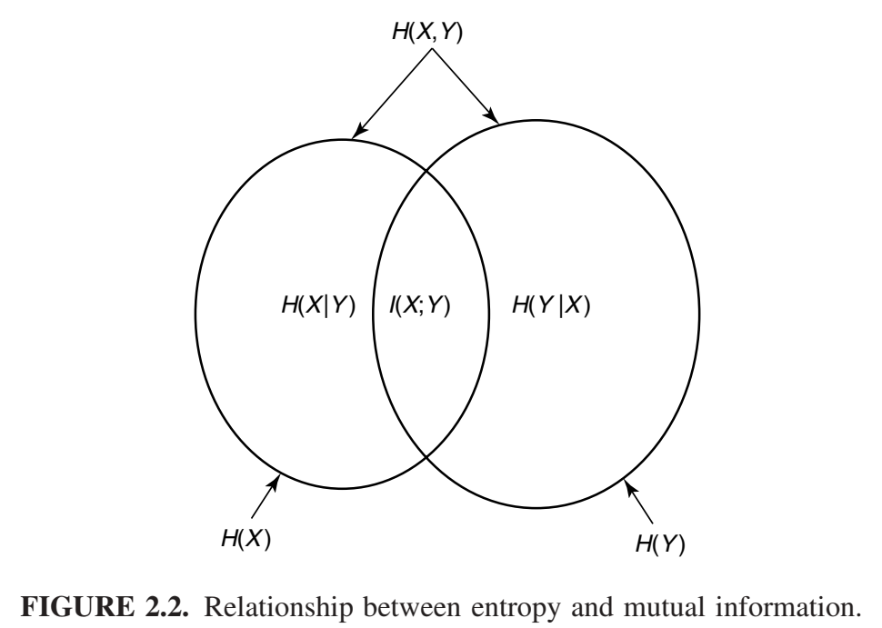
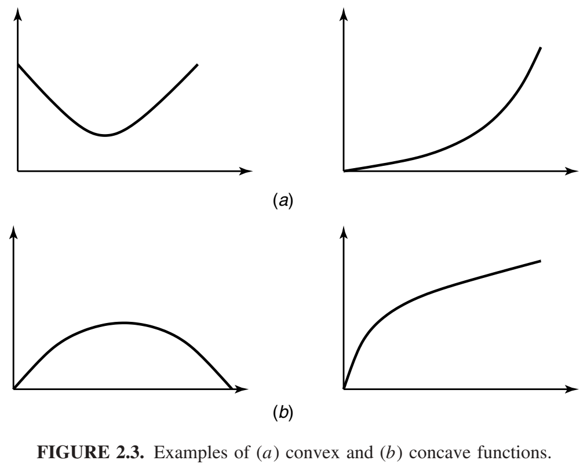
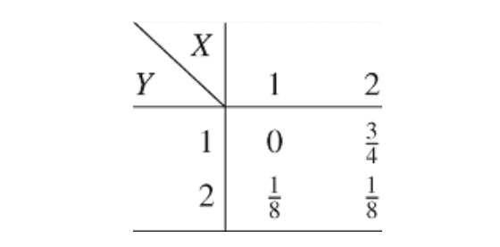
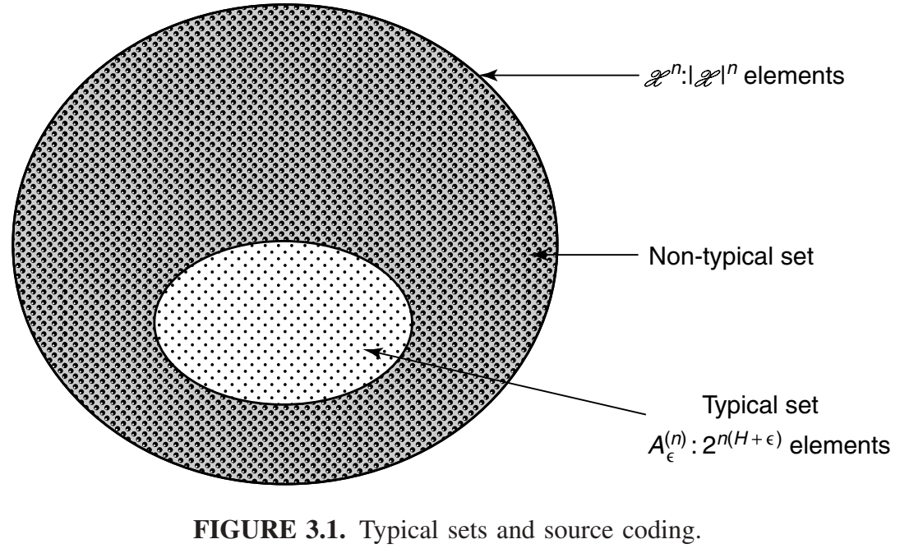
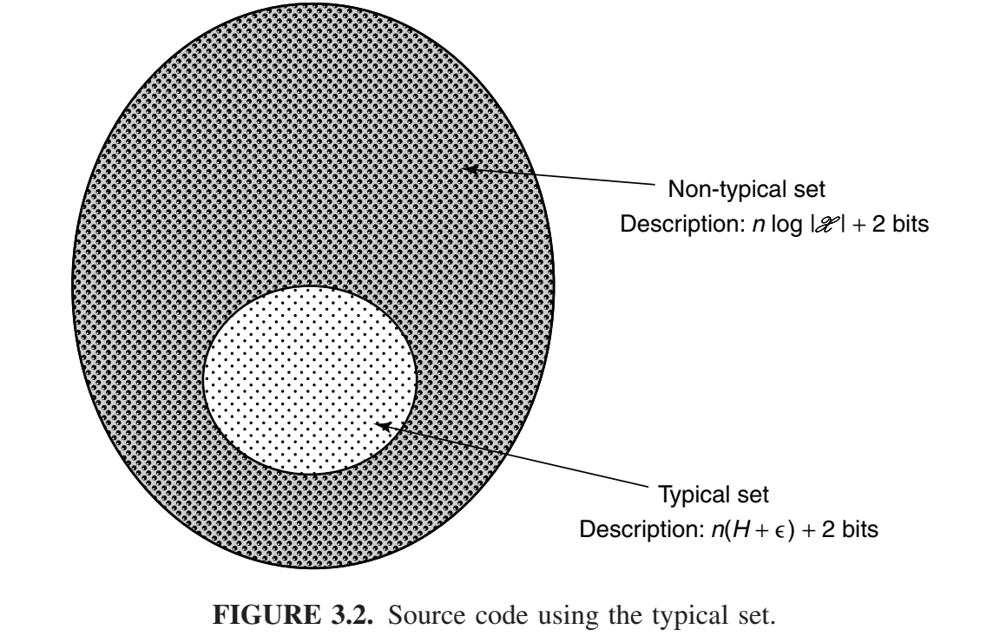
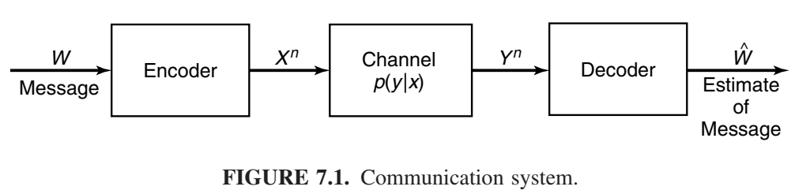

概览
信息论回答通信理论中的两个基本问题：数据压缩的极限是多少（答案：熵H），通信的极限传输速率是多少（答案：信道容量C）。为此，有人认为信息论是通信论的子集。我们认为不仅如此。事实上，它在统计物理学（热力学）、计算机科学（柯尔莫哥洛夫复杂性或算法复杂性）、统计推断（奥卡姆剃刀：“最简单的解释是最好的”）以及概率和统计学（最优假设检验和估计的误差指数）方面都有着根本性的贡献。
本章“第一讲”回顾了信息论及其相关的概念。该主题的完整定义和研究从第二章开始。图 1.1 展示了信息论与其他领域的关系。如图所示，信息论与物理学（统计力学）、数学（概率论）、电子工程（通信理论）和计算机科学（算法复杂性）相交叉。现在我们将更详细地描述这些交叉领域。

电气工程（通信理论）。20世纪40年代初，人们认为以正速率发送信息，且错误概率几乎为零是不可能的。香农证明了，对于所有低于信道容量的通信速率，错误概率都可以接近于零，这震惊了通信理论界。信道容量可以通过信道的噪声特性轻松计算出来。香农进一步论证，诸如音乐和语音之类的随机过程具有不可约的复杂度，低于该复杂度，信号就无法被压缩。他将其命名为熵，以纪念该词在热力学中的对应用法。他还指出，如果源的熵小于信道的容量，则可以实现渐近无差错的通信。

当今的信息理论代表了所有可能通信方案集合的极值点，如图 1.2 所示。数据压缩最小值 \(I(X;\hat{X})\) 位于通信思想集合的一个极端。所有数据压缩方案都要求描述速率至少等于该最小值。另一个极端是数据传输最大值\(I(X;Y)\) ，称为信道容量。因此，所有调制方案和数据压缩方案都位于这两个极限之间。
信息论也提出了实现这些通信极限的方法。然而，这些理论上最优的通信方案，尽管看似完美，却可能在计算上不切实际。我们之所以使用简单的调制和解调方案，而不是香农在信道容量定理证明中提出的随机编码和最近邻解码规则，正是因为这些方案在计算上可行。集成电路和编码设计的进步使我们能够获得香农理论的一些成果。Turbo码的出现最终实现了计算上的实用性。纠错码在光盘和DVD上的应用是信息论思想应用的一个很好的例子。
信息论中通信领域的最新研究集中于网络信息论：即在存在干扰和噪声的情况下，多个发送者向多个接收者同时进行通信的理论。发送者和接收者之间某些速率的权衡是意料之外的，并且都具有一定的数学简单性。然而，统一的理论仍有待发现。
计算机科学（Kolmogorov复杂性）。Kolmogorov、Chaitin 和 Solomonoff 提出了这样一种观点：数据字符串的复杂度可以用计算该字符串的最短二进制计算机程序的长度来定义。因此，复杂度就是最小描述长度。事实证明，这种复杂度定义具有普适性，即与计算机无关，并且具有根本性的意义。因此，Kolmogorov 复杂度为描述复杂性理论奠定了基础。令人欣慰的是，如果序列是从熵为 H 的分布中随机抽取的，则 Kolmogorov 复杂度 K 近似等于香农熵 H。因此，信息论与 Kolmogorov 复杂度之间的联系是完美的。事实上，我们认为 Kolmogorov 复杂度比香农熵更为根本。它是终极数据压缩，并能产生逻辑一致的推理过程。
算法复杂度和计算复杂度之间存在着令人愉悦的互补关系。我们可以将计算复杂度（时间复杂度）和柯尔莫哥洛夫复杂度（程序长度或描述复杂度）视为分别对应程序运行时间和程序长度的两个轴。柯尔莫哥洛夫复杂度侧重于沿第二个轴最小化，而计算复杂度则侧重于沿第一个轴最小化。目前关于同时最小化这两个轴的研究工作很少。
物理学（热力学）。统计力学是熵和热力学第二定律的发源地。熵总是增加的。此外，热力学第二定律还可以用来驳斥任何关于永动机的说法。我们将在第四章简要讨论热力学第二定律。
数学（概率论与统计学）。信息论的基本量——熵、相对熵和互信息——被定义为概率分布的泛函。反过来，它们表征了长序列随机变量的行为，并使我们能够估计罕见事件的概率（大偏差理论），并在假设检验中找到最佳误差指数。
科学哲学（奥卡姆剃刀）。奥卡姆的威廉曾说：“如无必要，勿增原因”，或者换句话说，“最简单的解释就是最好的”。所罗门诺夫和柴廷令人信服地论证道，如果对所有能够解释数据的程序进行加权组合，并观察它们接下来的输出结果，就能得到一个普遍适用的预测程序。此外，这种推论在许多统计学无法处理的问题中也适用。例如，该程序最终可以预测π的后续数字。当该程序应用于正面概率为0.7的抛硬币实验时，也能推断出π的后续数字。当应用于股票市场时，该程序应该能够找到股票市场的所有“规律”，并对其进行最优推断。原则上，这样的程序应该能够发现牛顿物理定律。当然，这种推论非常不切实际，因为剔除所有无法生成现有数据的计算机程序将耗费极其漫长的时间。我们可以预测一百年后的明天会发生什么。
经济学（投资）。在稳定的股票市场中反复投资会导致财富呈指数级增长。财富增长率是股票市场熵值的对偶。股票市场最优投资理论与信息论之间存在着惊人的相似之处。我们发展投资理论来探索这种对偶性。
计算 vs. 通信。当我们用更小的组件构建更大的计算机时，我们同时面临计算限制和通信限制。计算受限于通信，通信受限于计算。这两者交织在一起，因此，所有基于信息论的通信理论的发展都应该对计算理论产生直接影响。
本书预览
信息论最初探讨的问题在于数据压缩和传输领域。答案是诸如熵和互信息之类的量，它们是构成通信过程基础的概率分布的函数。一些定义将有助于初步讨论。我们将在第二章中重复这些定义。
具有概率质量函数\(p(x)\)的随机变量 \(X\) 的熵定义为 \[H(X) = -\sum_x p(x)\ log_2\ p(x).\tag{1.1} \]
我们使用以 2 为底的对数。熵将以比特为单位进行测量。熵是衡量随机变量平均不确定性的指标。它是描述随机变量平均所需的比特数。
示例 1.1.1 假设一个随机变量在32个结果上服从均匀分布。为了识别一个结果，我们需要一个包含32个不同值的标签。因此，5位字符串足以作为标签。
该随机变量的熵为 \[H(x) = -\sum_{i=1}^{32} p(i)\ \text{log}\ p(i) = -\sum_{i=1}^{32}\frac{1}{32}\ \text{log} \frac{1}{32} = \text{1og}\ 32 = 5\ bits, \tag{1.2}\]
这与描述 X 所需的位数一致。在这种情况下，所有结果都有相同长度的表示。
现在考虑一个非均匀分布的例子。
示例 1.1.2 假设有一场有八匹马参加的赛马比赛。假设这八匹马获胜的概率分别为 \(\frac{1}{2}, \frac{1}{4}, \frac{1}{8}, \frac{1}{16},\frac{1}{64}, \frac{1}{64},\frac{1}{64}, \frac{1}{64},\)。我们可以计算这场赛马比赛的熵为
\begin{align} H(X) &= -\frac{1}{2}\ \text{log}\ \frac{1}{2} -\frac{1}{4}\ \text{log}\ \frac{1}{4} -\frac{1}{8}\ \text{log}\ \frac{1}{8} -4\frac{1}{64}\ \text{log}\ \frac{1}{64}\\ &= 2 \ bits. \tag{1.3} \end{align}
假设我们想发送一条消息来表明哪匹马赢得了比赛。一种选择是发送获胜马的索引。这种描述需要3位来表示任何一匹马。但获胜概率并非均匀分布。因此，对获胜概率较高的马使用较短的描述，对获胜概率较低的马使用较长的描述是合理的，这样可以降低平均描述长度。例如，我们可以使用以下一组位串来表示八匹马：0、10、110、1110、111100、111101、111110、111111。在这种情况下，平均描述长度为2位，而均匀编码则为3位。注意，在这种情况下，平均描述长度等于熵。在第五章中，我们证明了随机变量的熵是表示该随机变量所需的平均位数的下限，以及在“20 个问题”游戏中识别变量所需的平均问题数量的下限。我们还展示了如何构建平均长度在熵的 1 位以内的表示。
信息论中的熵概念与统计力学中的熵概念相关。如果我们画一个由n个独立同分布（i.i.d.）随机变量组成的序列，我们将证明一个“典型”序列的概率约为\(2^{-n\ H(x)}\)，并且大约有\(2^{n\ H(x)}\)个这样的典型序列。这一性质（称为渐近均分性质（AEP））是信息论中许多证明的基础。稍后我们将介绍其他一些可以用熵作为自然答案的问题（例如，生成一个随机变量所需的公平抛硬币次数）。
随机变量描述复杂度的概念可以扩展为定义单个字符串的描述复杂度。二进制字符串的柯尔莫哥洛夫复杂度定义为打印该字符串的最短计算机程序的长度。事实证明，如果该字符串确实是随机的，则柯尔莫哥洛夫复杂度接近于熵。柯尔莫哥洛夫复杂度是一个自然的框架，可以用来思考统计推断和建模问题，并有助于更清晰地理解奥卡姆剃刀定律：“最简单的解释就是最好的”。我们将在第一章中描述柯尔莫哥洛夫复杂度的一些简单性质。
熵是单个随机变量的不确定性。我们可以定义条件熵 H(X|Y)，它是在已知另一个随机变量的条件下，一个随机变量的熵。另一个随机变量导致的不确定性的减少被称为互信息。对于两个随机变量 X 和 Y 来说，这种减少被称为互信息
\[I(X;Y) = H(X) - H(X|Y) = \sum_{x,y}p(x,y)\ \text{1og}\ \frac{p(x,y)}{p(x)p(y)}.\tag{1.4}\]
互信息\(I(X;Y)\)是两个随机变量之间依赖关系的度量。它关于 X 和 Y 对称且始终为非负值，当且仅当 X 和 Y 独立时才等于零。
通信信道是一个输出概率依赖于输入的系统。它的特征在于概率转移矩阵 p(y|x)，该矩阵决定了给定输入时输出的条件分布。对于输入为 X 且输出为 Y 的通信信道，我们可以将容量 C 定义为
\[C = {max}_{p(x)}\ I(X;Y). \tag{1.5}\]
稍后我们将说明，容量是指我们能够通过信道发送信息并在输出端以极低的错误概率恢复信息的最大速率。我们将通过几个例子来说明这一点。
示例 1.1.3 （无噪声二进制信道）对于此通道，二进制输入在输出端精确再现。该通道如图 1.3 所示。此处，任何传输的比特都能无误地接收。因此，每次传输，我们可以可靠地向接收方发送 1 比特，容量为 1 比特。我们还可以计算信息容量 C = \(max\ I(X;Y)\) = 1 比特。

示例 1.1.4 （噪声四符号信道）考虑图 1.4 所示的信道。在该信道中，每个输入字母要么以概率 \(\frac{1}{2}\) 被接收为同一个字母，要么以概率 \(\frac{1}{2}\) 被接收为下一个字母。如果我们使用全部四个输入符号，检查输出将无法确定发送了哪个输入符号。另一方面，如果我们只使用两个输入（比如 1 和 3），我们可以立即从输出中判断发送了哪个输入符号。该信道的行为类似于例 1.1.3 中的无噪声信道，我们每次可以通过该信道无错误地传输 1 比特。我们可以计算出这种情况下信道容量 C = \(max\ I(X;Y)\) ，它等于每次传输 1 比特，这与上面的分析一致。

一般来说，通信信道的结构不像本例这样简单，因此我们无法总是找到一个输入子集来无错误地发送信息。但如果我们考虑一个传输序列，所有信道都像本例一样，那么我们就可以找到一个输入序列（码字）的子集，该子集可用于在信道上传输信息，并且与每个码字相关的可能输出序列集几乎不相交。然后，我们可以观察输出序列，并找出错误概率极低的输入序列。
示例 1.1.5 （二进制对称信道）这是一个噪声通信系统的基本示例。信道如图 1.5 所示。

该信道有一个二进制输入，其输出等于输入的概率为1-p。另一方面，概率为p，0被接收为1，反之亦然。在这种情况下，信道容量可以计算为每次传输\(C = 1 + p\ \text{1og}\ p + (1-p)\ \text{log}(1-p)\)比特。然而，如何实现这一容量已不再显而易见。然而，如果我们多次使用该信道，它就会开始变得像示例1.1.4中的噪声四符号信道，我们可以以每次传输C比特的速率发送信息，并且错误概率任意低。
信道信息传输速率的极限是信道容量。信道编码定理表明，这一极限可以通过使用较长码块长度的编码来实现。在实际通信系统中，我们所能使用的编码的复杂程度受到限制，因此可能无法实现容量。
互信息实际上是一个更普遍的量——相对熵 D(p||q) 的一个特例，它衡量的是两个概率质量函数 p 和 q 之间的“距离”。它的定义如下：
\[D(p||q) = \sum_x p(x)\ log\frac{p(x)}{q(x)}.\]
虽然相对熵并非真正的度量，但它具备度量的一些属性。具体而言，它始终为非负值，且当且仅当 p = q 时为零。相对熵是分布 p 和 q 之间假设检验中误差概率的指数。相对熵可用于定义概率分布的几何结构，从而解释大偏差理论的许多结果。
信息论与股票市场投资理论有很多相似之处。股票市场由一个随机向量X定义，其元素为非负数，等于股票收盘价与开盘价之比。对于服从分布F(x)的股票市场，我们可以将倍增率W定义为
\[W\ = {max}_{b:b_i\ge 0, \sum b_i = 1}\int \text{log}\ b^t x\ d\ F(x). \tag{1.7}\]
倍增率是财富增长的最大渐近指数。倍增率具有许多与熵相似的性质。我们将在第16章探讨其中一些性质。
H、I、C、D、K、W 等量自然出现在以下领域：
-
数据压缩。随机变量的熵 H 是该随机变量最短描述的平均长度的下限。我们可以构建平均长度与熵相差 1 位以内的描述。如果我们放宽完美恢复源的约束，那么我们可以问：描述失真度达到 D 的源需要多少通信速率？以及多少信道容量足以使该源在信道上传输，并在失真度小于或等于 D 的情况下进行重建？这就是速率失真理论的主题。
当我们尝试形式化非随机对象的最短描述概念时，我们得到了柯尔莫哥洛夫复杂度K的定义。随后，我们证明了柯尔莫哥洛夫复杂度具有普遍性，并且满足最短描述理论的许多直观要求。
-
数据传输。我们考虑如何传输信息，使得接收方能够以较小的错误概率解码消息。本质上，我们希望找到相互距离较远的码字（输入信道的符号序列），使得它们的噪声版本（在信道输出端可用）可以区分。这相当于在高维空间中进行球体填充。对于任何一组码字，都可以计算接收方出错（即对发送了哪个码字做出错误的判断）的概率。然而，在大多数情况下，这种计算非常繁琐。
香农利用随机生成的编码证明了，人们可以以低于信道容量C的任何速率发送信息，且错误概率任意低。随机生成的编码这一概念非常独特。它为一个非常困难的问题的简单分析提供了基础。证明中的一个关键思想是典型序列的概念。容量C是可区分输入信号数量的对数。
-
网络信息论。前面提到的每个主题都涉及单个源或单个信道。如果希望压缩多个源中的每一个，然后将压缩后的描述组合在一起，形成一个源的联合重构，该怎么办？这个问题可以通过斯莱皮安-沃尔夫定理（Slepian–Wolf theorem）来解决。或者，如果多个发送者独立地向一个公共接收者发送信息，该怎么办？这个信道的容量是多少？这就是廖和阿尔斯韦德解决的多址信道。或者，如果有一个发送者和多个接收者，并且希望同时向每个接收者传递（可能不同的）信息，该怎么办？这就是广播信道。最后，如果在干扰和噪声环境中有任意数量的发送者和接收者，该怎么办？从各个发送者到接收者的可实现速率的容量范围是多少？这是一般的网络信息论问题。所有上述问题都属于多用户或网络信息论的一般领域。尽管对网络综合理论的希望可能超出了当前的研究技术，但人们仍然希望所有答案都只涉及复杂形式的相互信息和相对熵。
-
遍历理论。渐近均分定理指出，一个遍历过程的大多数n个样本序列的概率约为\(2^{-n\ H}\)，并且大约有\(2^{n\ H}\)个这样的典型序列。
-
假设检验。相对熵D是两个分布之间假设检验中误差概率的指数。 它是分布之间距离的自然度量。
-
统计力学。熵H在统计力学中作为物理系统中不确定性或无序性的量度出现。粗略地说，熵是物理系统配置方式数量的对数。热力学第二定律指出，封闭系统的熵不能减少。稍后我们将对第二定律进行一些解释。
-
量子力学。这里，冯·诺依曼熵 \(S = tr(\rho\ ln \rho) = \sum_i \lambda_i\ \text{log}\ \lambda_i\)相当于经典香农-玻尔兹曼熵 \(H = -\sum_i p_i\ \text{log}\ p_i\)。由此可以找到数据压缩和信道容量的量子力学版本。
-
推理。我们可以使用柯尔莫哥洛夫复杂度 K 的概念来找到数据的最短描述，并以此作为模型预测下一步的走向。最大化不确定性或熵的模型，可以得到最大熵推理方法。
-
赌博与投资。财富增长率的最优指数由倍增率W决定。对于赔率均匀的赛马比赛，倍增率W与熵H之和为常数。由于辅助信息导致的倍增率的增加，等于赛马比赛与辅助信息之间的互信息I。类似的结果也适用于股票市场的投资。
-
概率论。渐近均分性质 (AEP) 表明，大多数序列具有典型的特征，即它们的样本熵接近于 H。因此，可以将注意力集中于这些大约 \(2^{nH}\) 个典型序列。在大偏差理论中，一个集合的概率约为 \(2^{−nD}\)，其中 D 是集合中最接近元素与真实分布之间的相对熵距离。
-
复杂性理论。柯尔莫哥洛夫复杂度 K 是衡量对象描述复杂性的指标。它与计算复杂度相关，但又有所不同，后者衡量的是计算所需的时间或空间。
诸如熵和相对熵之类的信息论量，作为通信和统计学中基本问题的答案，屡屡出现。在研究这些问题之前，我们将先了解这些答案的一些性质。我们将从第二章开始，介绍熵、相对熵和互信息的定义和基本性质。
熵、相对熵和互信息
本章将介绍后续理论发展所需的大部分基本定义。我们忍不住要尝试它们之间的关系和解释，并相信它们未来的实用性。在定义了熵和互信息之后，我们将建立链式法则、互信息的非负性以及数据处理不等式，并通过考察充分统计和法诺不等式来说明这些定义。
信息的概念过于宽泛，无法用单一定义完全概括。然而，对于任何概率分布，我们定义了一个称为熵的量，它具有许多与信息度量的直观概念相符的属性。该概念被扩展用于定义互信息，互信息是衡量一个随机变量包含的关于另一个随机变量的信息量的指标。熵随后成为随机变量的自信息。互信息是更通用的量——相对熵——的一个特例，相对熵是衡量两个概率分布之间距离的指标。所有这些量都密切相关，并具有许多简单的属性，其中一些属性我们将在本章中推导。
在后面的章节中，我们将展示这些量是如何自然地解答通信、统计、复杂性和赌博等诸多领域的问题的。这将是对这些定义价值的终极检验。
熵
我们首先引入熵的概念，它是衡量随机变量不确定性的指标。设 X 是一个离散随机变量，其字母为 X，概率质量函数 \(p(x) = Pr\{X = x\}, x\in \mathcal{X}\)。为了方便起见，我们将概率质量函数表示为 p(x)，而不是 \(p_X(x)\)。因此，p(x) 和 p(y) 指的是两个不同的随机变量，实际上分别是不同的概率质量函数 \(p_X(x)\) 和 \(p_Y(y)\)。
定义 离散随机变量 X的熵\(H(X)\)定义为
\[H(X) = -\sum_{x\in \mathcal{X}}p(x)\ \text{log}\ p(x). \tag{2.1}\]
我们也将上述量写为 H(p)。对数的底为2，熵熵以比特（bit）表示。例如，公平抛硬币的熵是1比特。我们将使用 \(0\ \text{log}\ 0 = 0\) 的约定，这很容易通过连续性证明，因为当 \(x \rightarrow 0\) 时 \(x\ \text{log}\ x \rightarrow 0\)。添加零概率项不会改变熵。
如果对数的底数是 b，我们将熵表示为 Hb(X)。如果对数的底数是 e，则熵以纳 (n) 为单位。除非另有说明，所有对数都以 2 为底，因此所有熵都以比特 (bit) 为单位。注意，熵是 X 分布的函数。它不依赖于随机变量 X 的实际值，而仅依赖于概率。
我们用 E 表示期望。因此，如果\(X \sim p(x)\)，则随机变量 \(g(X)\) 的期望值写为
\[E_p g(X) = \sum_{x\in \mathcal{X}}g(x)p(x), \tag{2.2}\]
或者简化为\(E_g(X)\)，当从上下文理解概率质量函数时。当 \(g(X) = \text{log}\frac{1}{p(X)}\)时，我们将对 \(p(x)\)下 \(g(X)\) 的怪异自指期望产生特别的兴趣。
注 X的熵也可以解释为随机变量\(\text{log}\frac{1}{p(X)}\)的期望值，其中，X根据概率质量函数\(p(x)\)抽取的。因此， \[H(X) = E_p\ \text{log}\frac{1}{p(X)}. \tag{2.3}\]
熵的这种定义与热力学中的熵的定义相关。一些联系稍后探索。通过定义随机变量的熵必须满足的某些性质，可以公理化地推导出熵的定义。该方法展示在问题2.46。我们不使用公理方法来证明熵的定义，而是表明它是许多自然问题的答案，例如“随机变量的最短描述的平均长度是多少？”首先，我们推导出该定义的一些直接结果。
引理 2.1.1 \[H(X) \ge 0.\] 证明： \(0 \le p(x) \le 1\)意味着 \(\text{log}\frac{1}{p(x)} \ge 0.\)
引理 2.1.2 \[H_b(X) = (log_b a)H_a(X).\]
证明： \(log_b p = log_b a\ log_a\ p.\)
熵的第二个性质可以改变定义中对数的底。熵可以从一个底变换到另一个，通过乘以适当的因子。
示例 2.1.1 设 \[ X = \begin{cases} &1\quad&\text{概率 p}, \\ &0\quad&\text{概率 1- p}. \end{cases} \tag{2.4} \]
那么 \[H(X) = -p\ \text{log}\ p - (1 - p)\text{log}(1-p) \stackrel{def}{=} H(p). \tag{2.5}\]
特别地，当\(p = \frac{1}{2}\)时，\(H(X) = 1\)。函数H（p）的图形如图2.1所示。该图形展示了熵的一些基本属性：它是分布的凹函数，当p=0或1时等于0。这是有道理的，因为当p=0或1时，变量不是随机的，也没有不确定性。类似的，当\(p = \frac{1}{2}\)时，不确定性最大，同时也对应着熵的最大值。

示例 2.1.2 设
\[ X = \begin{cases} &a\quad&\text{概率}\frac{1}{2},\\ &b\quad&\text{概率}\frac{1}{4},\\ &c\quad&\text{概率}\frac{1}{8},\\ &d\quad&\text{概率}\frac{1}{8}. \end{cases} \tag{2.6} \]
X的熵为
\[H(X) = -\frac{1}{2}\ \text{log}\ \frac{1}{2}-\frac{1}{4}\ \text{log}\ \frac{1}{4}-\frac{1}{8}\ \text{log}\ \frac{1}{8}-\frac{1}{8}\ \text{log}\ \frac{1}{8} = \frac{7}{4}\ bits.\tag{2.7}\]
假设我们希望用最少数量的二元问题来确定 X 的值。一个有效的第一个问题是“X = a 吗？”，这将概率分成两半。如果第一个问题的答案为“否”，则第二个问题可以是“X = b 吗？”，第三个问题可以是“X = c 吗？”。由此得出所需的二元问题的预期数量为 1.75。这也就是确定 X 值所需的二元问题的最小预期数量。在第五章中，我们将证明确定 X 值所需的二元问题的最小预期数量介于 H(X) 和 H(X) + 1 之间。
联合熵和条件熵
2.1节中，我们定义了单个变量的熵。现在，扩展到一对随机变量的定义。该定义中没有什么真正新的东西，因为\(X,Y\)可以认为时单个向量值随机变量。
定义 具有联合分布\(p(x,y)\)的一对离散随机变量\((X,Y)\)的联合熵\(H(X,Y)\)定义为 \[H(X,Y) = \sum_{x\in\mathcal{X}}\sum_{y\in\mathcal{Y}}\ p(x,y)\ \text{log}\ p(x,y), \tag{2.8}\]
也可以表示为
\[H(X,Y) = -E\ \text{log}\ p(X,Y). \tag{2.9}\]
我们还将给定一个随机变量的条件熵定义为条件分布的熵的期望值，对条件随机变量取平均值。
定义 若\((X,Y) \sim p(x,y)\)，条件熵 \(H(Y|X)\)定义为 \begin{align} H(Y|X) &= \sum_{x\in\mathcal{X}}p(x)H(Y|X\ =\ x) \tag{2.10}\\ &= -\sum_{x\in\mathcal{X}}p(x)\sum_{y\in\mathcal{Y}}p(y|x)\ \text{log}\ p(y|x) \tag{2.11}\\ &= -\sum_{x\in\mathcal{X}}\sum_{y\in\mathcal{Y}}p(x,y)\ \text{log}\ p(y|x)\tag{2.12}\\ &= -E\ \text{log}\ p(Y|X). \tag{2.13} \end{align}
联合熵和条件熵定义的自然性体现在：一对随机变量的熵等于其中一个变量的熵加上另一个变量的条件熵。这在以下定理中得到证明。
定理 2.2.1 （链式法则） \[H(X,Y) = H(X) + H(Y|X).\tag{2.14}\]
证明 \begin{align} H(X,Y) &= -\sum_{x\in\mathcal{X}}\sum_{y\in\mathcal{Y}}p(x,y)\text{log}p(x,y)\tag{2.15}\\ &= -\sum_{x\in\mathcal{X}}\sum_{y\in\mathcal{Y}}p(x,y)\text{log}p(x)p(y|x)\tag{2.16}\\ &= -\sum_{x\in\mathcal{X}}\sum_{y\in\mathcal{Y}}p(x,y)\text{log}p(x) -\sum_{x\in\mathcal{X}}\sum_{y\in\mathcal{Y}}p(x,y)\text{log}p(x|y)\tag{2.17}\\ &= -\sum_{x\in\mathcal{X}}p(x)\text{log}p(x) -\sum_{x\in\mathcal{X}}\sum_{y\in\mathcal{Y}}p(x,y)\text{log}p(x|y)\tag{2.18}\\ &= H(X) + H(Y|X). \tag{2.19} \end{align}
等价地，我们可以写为
\[\text{log}\ p(X,Y) = \text{log}\ p(X) + \text{log}\ p(Y|X)\tag{2.20}\]
并取方程两边的期望值，得到定理。
推论 \[H(X,Y|Z) = H(X|Z) + H(Y|X, Z). \tag{2.21}\]
证明： 证明与定理遵循相同的思路。
示例 2.2.1 设\((X,Y)\)具有如下联合分布：

X的边缘分布是\((\frac{1}{2}, \frac{1}{4}, \frac{1}{8}, \frac{1}{8})\)，且Y的边缘分布为\((\frac{1}{4}, \frac{1}{4}, \frac{1}{4}, \frac{1}{4})\)，以及，\(H(X) =\frac{7}{4} bits\)，\(H(Y) = 2\ bits\)。而且，
\begin{align} H(X|Y) &= \sum_{i=1}^4 p(Y\ =\ i) H(X| Y\ =\ i) \tag{2.22}\\ &= \frac{1}{4}H(\frac{1}{2}, \frac{1}{4}, \frac{1}{8}, \frac{1}{8}) + \frac{1}{4}H(\frac{1}{4}, \frac{1}{2}, \frac{1}{8}, \frac{1}{8}) \\ &\quad+\frac{1}{4}H(\frac{1}{4}, \frac{1}{4}, \frac{1}{4}, \frac{1}{4}) + \frac{1}{4}H(1,0,0,0)\tag{2.23}\\ &= \frac{1}{4} \times \frac{7}{4} + \frac{1}{4} \times \frac{7}{4} + \frac{1}{4} \times 2 + \frac{1}{4} \times 0\tag{2.24}\\ &= \frac{11}{8}\ bits.\tag{2.25} \end{align}
类似地，\(H(Y|X) = \frac{13}{8}\ bits\)， 以及 \(H(X,Y) = \frac{27}{8}\ bits\)。
注 请注意\(H(Y|X) \ne H(X|Y)\)。然而，\(H(X) - H(X|Y) = H(Y) - H(Y|X)\)，稍后我们利用该性质。
相对熵和互信息
随机变量的熵是衡量随机变量不确定性的指标；它衡量的是描述该随机变量所需的平均信息量。本节我们将介绍两个相关概念：相对熵和互信息。
相对熵是两个分布之间距离的度量。在统计学中，它作为似然比的期望对数而出现。相对熵 D(p||q) 是在真实分布为 p 时假设分布为 q 的低效率度量。例如，如果我们知道随机变量的真实分布 p，我们就可以用平均描述长度 H(p) 构造一个编码。相反，如果我们使用分布为 q 的编码，则平均需要 H(p) + D(p||q) 比特来描述随机变量。
定义 两个概率质量函数p（x）和q（x）之间的相对熵或Kullback-Leibler距离定义为 \begin{align} D(p||q) &= \sum_{x\in\mathcal{X}}p(x)\ \text{log}\ \frac{p(x)}{q(x)} \tag{2.26}\\ &= E_p\ \text{log}\ \frac{p(X)}{q(X)}.\tag{2.27} \end{align}
在上述定义中，我们使用 \(0\ \text{log}\ \frac{0}{0} = 0\)的约定，以及 \(0\ \text{log}\ \frac{0}{q} = 0\) 且\(p\ \text{log}\ \frac{p}{0} = \infty\)的约定（基于连续性论证）。因此，如果存在任意符号 \(x\in\mathcal{X}\)，使得 \(p(x) \gt 0\) 且 \(q(x) = 0\)，则 \(D(p||q) = \infty\)。
很快我们会证明相对熵总是非负的，以及当且仅当 p=q时，为0。然而，它不是分布间真实的距离，因为它不是对称的，并且不满足三角不等式。尽管如此，将相对熵认为是分布间的距离通常是有用的。
现在我们介绍互信息，它衡量一个随机变量包含的关于另一个随机变量的信息量。它是指由于了解另一个随机变量而减少的一个随机变量的不确定性。
定义 考虑两个随机变量X和Y，联合概率质量函数为\(p(x,y)\)，且边缘概率质量函数为p(x)和p(y)。互信息\(I(X;Y)\)是联合分布p(x,y) 和 p(x)p(y)乘积分布之间的相对熵:
\begin{align} I(X;Y) &= \sum_{x\in\mathcal{X}}\sum_{y\in\mathcal{Y}}p(x,y)\ \text{log}\ \frac{p(x,y)}{p(x)p(y)}\tag{2.28}\\ &= D(p(x,y) || p(x)p(y)) \tag{2.29}\\ &= E_{p(x,y)}\text{log}\frac{p(X,Y)}{p(X)p(Y)}.\tag{2.30} \end{align}
在第 8 章中，我们将此定义推广到连续随机变量，并在 (8.54) 中推广到可能是离散随机变量和连续随机变量混合的一般随机变量。
示例 2.3.1 设\(\mathcal{X} = \{0,1\}\)，并考虑\(\mathcal{X}\)上的两个分布p和q。令 \(p(0) = 1 - r\)，且 \(q(0) = 1 - s\)，\(q(1) = s\)。那么
\[D(p||q) = (1- r)\text{log}\frac{1-r}{1-s} + r\ \text{log}\frac{r}{s}\tag{2.31}\]
且
\[D(q||p) = (1-s)\text{log}\frac{1-s}{1-r} + s\ \text{log}\frac{s}{r}. \tag{2.32}\]
若 \(r = s\)，那么 \(D(p||q) = D(q||p) = 0\)。若 \(r =\frac{1}{2})\, \(s = \frac{1}{4}\)，那么我们可以计算 \[D(p||q) = \frac{1}{2}\ \text{log}\frac{\frac{1}{2}}{\frac{3}{4}} + \frac{1}{2}\ \text{log}\frac{\frac{1}{2}}{\frac{1}{4}} = 1 - \frac{1}{2}\ \text{log} 3 = 0.2075\ bit, \tag{2.33}\]
以及
\[D(q||p) = \frac{3}{4}\ \text{log}\frac{\frac{3}{4}}{\frac{1}{2}} + \frac{1}{4}\ \text{log}\frac{\frac{1}{4}}{\frac{1}{2}} = \frac{3}{4}\ \text{log} 3 - 1 = 0.1887\ bit, \tag{2.34}\]
请注意，一般来说，\(D(p||q) \ne D(q||p)\)。
熵和互信息之间的关系
我们可以将互信息\(I(X;Y)\)的定义重写为
\begin{align} I(X;Y) &= \sum_{x,y}p(x,y)\ \text{log}\ \frac{p(x,y)}{p(x)p(y)} \tag{2.35}\\ &= \sum_{x,y}p(x,y)\ \text{log}\frac{p(x|y)}{p(x)}\tag{2.36}\\ &= -\sum_{x,y}p(x,y)\ \text{log}\ p(x) + \sum_{x,y}\ p(x,y)\ \text{log}\ p(x|y)\tag{2.37}\\ &= -\sum_{x,y}p(x)\ \text{log}\ p(x) - \big(-\sum_{x,y}p(x,y)\ \text{log}\ p(x|y)\big)\tag{2.38}\\ &= H(X) - H(X|Y). \tag{2.39} \end{align}
因此，互信息 I (X; Y) 是由于了解 Y 而导致的 X 的不确定性的减少。
根据对称性，也可以得出 \[I(X;Y) = H(Y) - H(Y|X)/ \tag{2.40}\]
因此，X对Y的描述与Y对X的描述一样多。
由于\(H(X,Y) = H(X) + H(Y|X)\)，如第2.2节所示，我们有
\[I(X;Y) = H(X) + H(Y) - H(X,Y). \tag{2.41}\]
最后，我们注意到 \[I(X;X) = H(X) - H(X|X) = H(X). \tag{2.42}\]
因此，随机变量与其自身的互信息就是该随机变量的熵。这就是熵有时被称为自信息的原因。
综合这些结果，我们得到以下定理。
定理 2.4.1 （互信息和熵） \[I(X;Y) = H(X) - H(X|Y) \tag{2.43}\]
\[I(X;Y) = H(Y) - H(Y|X)\tag{2.44}\]
\[I(X;Y) = H(X) + H(Y) - H(X,Y)\tag{2.45}\]
\[I(X;Y) = I(Y;X)\tag{2.46}\]
\[I(X;X) = H(X). \tag{2.47}\]
H(X)、H(Y)、H(X, Y)、H(X|Y)、H(Y|X) 和 I(X; Y) 之间的关系可以用韦恩图表示（图 2.2）。注意，互信息 I(X; Y) 对应于 X 中的信息与 Y 中信息的交集。

示例 2.4.1 对于示例2.2.1中的联合分布，很容易计算互信息\(I(X;Y) = H(X) - H(X|Y) = H(Y) - H(Y|X) = 0.375\ bit\)。
熵、相对熵和互信息的链式法则
我们现在表明，随机变量集合的熵是条件熵的总和。
定理 2.5.1 （熵的链式法则） 设\(X_1,X_2,\dots,X_n\)根据 \(p(x_1,x_2,\dots,x_n)\)抽取。那么
\[H(X_1,X_2,\dots,X_n) = \sum_{i=1}^n\ H(X_i |X_{i-1},\dots,X_1).\tag{2.48}\]
证明： 通过反复应用熵的双变量展开规则，我们得到
\[H(X_1,X_2) = H(X_1) + H(X_2|X_1), \tag{2.49}\]
\begin{align} H(X_1,X_2,X_3) &= H(X_1) + H(X_2, X_3|X_1)\tag{2.50}\\ &= H(X_1) + H(X_2|X_1) + H(X_3|X_2, X_1), \tag{2.51}\\ &\vdots\\ H(X_1,X_2,X_n) &= H(X_1) + H(X_2|X_1) + \dots + H(X_n|X_{n-1},\dots,X_1)\tag{2.52}\\ &= \sum_{i=1}^n H(X_i| X_{i-1},\dots,X_1).\tag{2.53} \end{align}
替代证明： 我们写为\(p(x_1,\dots,x_n) = \prod_{i=1}^n\ p(x_i|x_{i-1},\dots,x_1)\)，并评估
\begin{align} H(X_1,X_2,\dots,X_n)\\ \quad&= - \sum_{x_1,x_2,\dots,x_n}p(x_1,x_2,\dots,x_n)\ \text{log}\ p(x_1,x_2,\dots,x_n)\tag{2.54}\\ &= - \sum_{x_1,x_2,\dots,x_n}p(x_1,x_2,\dots,x_n)\ \text{log}\ \prod_{i=1}^n\ p(x_i|x_{i-1},\dots,x_1)\tag{2.55}\\ &= - \sum_{x_1,x_2,\dots,x_n}\sum_{i=1}^n\ p(x_1,x_2,\dots,x_n)\ \text{log}\ p(x_i|x_{i-1},\dots,x_1)\tag{2.56}\\ &= - \sum_{i=1}^n\sum_{x_1,x_2,\dots,x_n}\ p(x_1,x_2,\dots,x_n)\ \text{log}\ p(x_i|x_{i-1},\dots,x_1)\tag{2.57}\\ &= - \sum_{i=1}^n\sum_{x_1,x_2,\dots,x_i}\ p(x_1,x_2,\dots,x_i)\ \text{log}\ p(x_i|x_{i-1},\dots,x_1)\tag{2.58}\\ &= \sum_{n=1}^n H(X_i|X_{i-1},\dots,X_1).\tag{2.59} \end{align}
我们现在将条件互信息定义为在给定Z时，由于知道Y而导致的X不确定性的降低。
定义 给定X，随机变量X和Y的条件互信息定义为 \begin{align} I(X;Y|Z) &= H(X|Z) - H(X|Y, z)\tag{2.60}\\ &= E_{p(x,y,z)}\text{log}\frac{p(X,Y|Z)}{p(X|Z)p(Y|Z)}.\tag{2.61} \end{align}
互信息也满足链式法则。
定理 2.5.2 (信息的链式法则) \[I(X_1,X_2,\dots,X_n;Y) = \sum_{i=1}^n I(X_i;Y|X_{i-1},X_{i-1},\dots,X_1).\tag{2.62}\]
证明 \begin{align} I(X_1,X_2,\dots,X_n;Y)\\ &= H(X_1,X_2,\dots,X_n) - H(X_1,X_2,\dots,X_n|Y)\tag{2.63}\\ &= \sum_{i=1}^n H(X_i|X_{i-1},\dots,X_1)- \sum_{i=1}^n H(X_i|X_{i-1},\dots,X_1, Y)\\ &= \sum_{i=1}^n I(X_i;Y|X_1,X_2,\dots,X_{i-1}). \tag{2.64} \end{align}
我们定义相对熵的条件版本。
定义 对于联合概率质量函数p(x,y)和q(x,y)，条件相对熵\(D(p(y|X)||q(y|x))\)是条件概率质量函数\(p(y|x)\)和q(y|x)之间的相对熵在概率质量函数p(x)上的平均值。更准确地说 \begin{align} D(p(y|x)||q(y|x)) &= \sum_{x}p(x)\sum_y p(y|x)\ \text{log}\ \frac{p(y|x)}{q(y|x)}\tag{2.65}\\ &= E_{p(x,y)}\ \text{log}\frac{p(Y|X)}{q(Y|X)}.\tag{2.66} \end{align}
条件相对熵的表示法并不明确，因为它忽略了条件随机变量的分布p（x）。然而，通常从上下文来理解。
一对随机变量上两个联合分布之间的相对熵可以展开为相对熵和条件相对熵之和。相对熵的链式法则在第4.4节中用于证明热力学第二定律的一个版本。
定理 2.5.3 （相对熵的链式法则） \[D(p(x,y)||q(x,y)) = D(p(x)||q(x)) + D(p(y|x)||q(y|x)).\tag{2.67}\]
证明
\begin{align} D(p(x,y)||q(x,y))\\ &= \sum_x\sum_yp(x,y)\ \text{log}\frac{p(x,y)}{q(x,y)}\tag{2.68}\\ &= \sum_x\sum_yp(x,y)\ \text{log}\frac{p(x)p(y|x)}{q(x)q(y|x)}\tag{2.69}\\ &= \sum_x\sum_yp(x,y)\ \text{log}\frac{p(x)}{q(x)} + \sum_x\sum_y p(x,y)\ \text{log}\frac{p(y|x)}{q(y|x)}\tag{2.70}\\ &= D(p(x)||q(x)) + D(p(y|x)||q(y|x)).\tag{2.71} \end{align}
Jensen不等式及其影响
在本节中，我们将证明前面定义的一些简单性质。我们从凸函数的性质开始。
定义 函数\(f(x)\)在区间 \((a,b)\) 上是凸函数，如果对于每个 \(x_1, x_2 \in (a, b)\) 且 \(0 \le \lambda \le 1\)，
\[f(\lambda x_1 + (1-\lambda)x_2) \le \lambda f(x_1) + (1-\lambda)f(x_2).\tag{2.72}\]
如果仅当λ= 0 或λ= 1 时等式成立，则函数 f 被称为严格凸函数。
定义 如果 −f 是凸函数，则函数 f 是凹函数。如果函数始终位于任意弦的下方，则函数是凸函数。如果函数始终位于任意弦的上方，则函数是凹函数。
凸函数的例子包括\(x^2\)、\(|x|\)，\(e^x\)，\(x\ \text{log}\ x\)(对于\(x \ge 0)\)等等。凹函数的例子包括\(\text{log}\ x)\)和\(\sqrt{x}\)，对于\(x \ge 0\)。图2.3展示了一些凸函数和凹函数的例子。请注意，线性函数\(ax +b\)既是凸也是凹的。凸性是信息论量（如熵和互信息）的许多基本性质的基础。在证明这些性质之前，我们先推导凸函数的一些简单结果。

定理 2.6.1 如果函数 f 的二阶导数在某个区间上为非负（正），则该函数在该区间上是凸的（严格凸的）。
证明： 我们使用函数在\(x_0\)附近的泰勒级数展开 \[f(x) = f(x_0) + f’(x_0)(x-x_0) + \frac{f’’(x^{\star})}{2}(x-x_0)^2, \tag{2.73}\]
其中，\(x^{\star}\)在 \(x_0\)和x之间。通过假设，\(f’’(x^{\star}) \ge 0\)，所以，对于全部x，最后一项是非负的。
我们设\(x_0 = \lambda x_1 + (1-\lambda)x_2\)并取 \(x = x_1\)，得到 \[f(x_1) \ge f(x_0) + f’(x_0)((1-\lambda)(x_1-x_2)).\tag{2.74}\]
类似的，取\(x=x_2\)，得到 \[f(x_2) \ge f(x_0) + f’(x_0)(\lambda(x_2 - x_1)).\tag{2.75}\]
(2.74)乘以\(\lambda\)，(2.75)乘以\(1- \lambda\)，并相加，我的得到(2.72)。严格凸性的证明过程与此相同。
定理 2.6.1 可以让我们立即验证当 x ≥ 0 时 x²、ex 和 x log x 的严格凸性，以及当 x ≥ 0 时 log x 和 \(\sqrt{x}\) 的严格凹性。
令 E 表示期望。因此，在离散情况下，\(EX = \sum_{x\in\mathcal{X}}p(x)x\)；在连续情况下，\(EX = \int\ xf(x)dx\)。
下一个不等式是数学中最广泛使用的不等式之一，也是信息论中许多基本结果的基础。
定理 2.6.2 （Jensen不等式）如果f是凸函数，且X是随机变量， \[Ef(X) \ge f(EX). \tag{2.76}\]
此外，如果 f 是严格凸的，则 (2.76) 中的等式意味着 X = EX 的概率为 1（即 X 为常数）。
证明：我们通过对质点数量的归纳，证明了离散分布的这一结论。当 f 为严格凸函数时，等式成立的条件留给读者自行证明。
对于双质点分布，不等式变为
\[p_1f(x_1) + p_2f(x_2) \ge f(p_1x_1 + p_2x_2), \tag{2.77}\]
这直接来自凸函数的定义。假设该定理对于具有 k − 1 个质点的分布成立。则对于\(i = 1,2,\dots, k-1\)，记 \({p_i}′ = p_i/(1 − p_k)\)，得到
\begin{align} \sum_{i=1}^k p_if(x_i) &= p_k f(x_k) + (1-p_k)\sum_{i=1}^{k-1}p_i’f(x_i)\tag{2.78}\\ &\ge p_kf(x_k) + (1-p_k)f(\sum_{i=1}^{k-1}p_i’x_i)\tag{2.79}\\ &\ge f(p_kx_k + (1-p_k)\sum_{i=1}^{k-1}p_i’x_i)\tag{2.80}\\ &=f(\sum_{i=1}^k p_ix_i),\tag{2.81} \end{align}
其中第一个不等式来自归纳假设，第二个不等式来自凸性的定义。
该证明可以通过连续性参数扩展到连续分布。
我们现在用这些结果来证明熵和相对熵的一些性质。以下定理具有根本重要性。
定理 2.6.3 （信息不等式）设\(p(x), q(x), x\in\mathcal{X}\)为两个概率质量函数。那么 \[D(p||q) \ge 0\tag{2.81}\]
当且仅当\(p(x)=q(x)\)时，对于所有x，等号成立。
证明：设 \(A = \{x: p(x)\gt 0\}\)为p(x)的支持集。那么
\begin{align} -D(p||q) &= -\sum_{x\in A}p(x)\ \text{log}\frac{p(x)}{q(x)}\tag{2.83}\\ &= \sum_{x\in A}p(x)\ \text{log}\frac{q(x)}{p(x)}\tag{2.84}\\ &\le \text{log}\sum_{x\in A}p(x)\frac{q(x)}{p(x)}\tag{2.85}\\ &= \text{log}\sum_{x\in A}q(x) \tag{2.86}\\ &\le \text{log}\sum_{x\in \mathcal{X}}q(x) \tag{2.87}\\ &= \text{log}\ 1\tag{2.88}\\ &= 0, \tag{2.89} \end{align}
其中，（2.85）来自Jensen不等式。由于\(\text{log}\ t\)是t的严格凹函数，当且仅当\(q(x)/p(x)\)处处常量时【即，对于所有x，\(q(x) = cp(x)\)】，（2.85）中等号成立。因此，\(sum_{x\in A}q(x) = c\sum_{x\in A}p(x) = c\)。当且仅当\(\sum_{x\in A}q(x) = \sum_{x\in \mathcal{X}}q(x)= 1\)时，（2.87）中等号成立，意味着c=1。因此，当且仅当\(p(x) = q(x)\)时，对于全部x，得到\(D(p||q) = 0\)。
引理 （互信息的非负性）对于任意两个随机变量X，Y，
\[I(X;Y) \ge 0, \tag{2.90}\]
当且仅当X和Y独立时，等号成立。
证明：\(I(X;Y) = D(p(x,y)||p(x)p(y)) \ge 0\)，当且仅当\(p(x,y) = p(x)p(y)\)（即X、Y独立）时，等号成立。
引理
\[D(p(y|x)||q(y|x))\ge 0, \tag{2.91}\]
当且仅当对于所有 y 和 x，p(y|x) = q(y|x) 且满足 p(x) > 0 时，等号成立。
引理 \[I(X;Y|Z) \ge 0, \tag{2.92}\]
当且仅当，给定Z，X和Y条件独立时，等号成立。
我们现在证明，在范围 X 上的均匀分布是该范围的最大熵分布。由此可见，任何在该范围内的随机变量的熵都不大于 log |X|。
定理 2.6.4 \(H(X) \le \text{log}\ |\mathcal{X}|\)，其中\(|\mathcal{X}|\)表示范围X内的元素数量，当且仅当X是\(\mathcal{X}\)上的均匀分布时，等号成立。
证明：设\(u(x) = \frac{1}{\mathcal{X}}\)为\(\mathcal{X}\)上的均匀概率质量函数，且p(x)为x的概率质量函数。那么
\[D(p || u) = \sum\ p(x)\text{log}\frac{p(x)}{u(x)} = \text{log}|\mathcal{X}| - H(X).\tag{2.93}\]
因此，由于相对熵的非负性，
\[0 \le D(p||u) = \text{log} |\mathcal{X}| - H(X). \tag{2.94}\]
定理 2.6.5 （条件作用会降低熵）（信息不会造成伤害）
\[H(X|Y) \le H(X)\tag{2.95}\]
当且仅当X和Y独立时，等号成立。
证明： \(0\le I(X;Y) = H(X) - H(X|Y).\)
直观地说，该定理表明，知道另一个随机变量 Y 只能减少 X 的不确定性。请注意，这仅在平均水平上成立。具体来说，\(H(X|Y\ =\ y)\)可能大于或小于或等于 H(X)，但平均而言，\(H(X|Y) = \sum_y p(y)H(X|Y=y) \le H(X)\)。例如，在法庭案件中，具体的新证据可能会增加不确定性，但平均而言，证据会减少不确定性。
示例 2.6.1 设(X,Y)有以下联合分布：

那么 \(H(X) = H(\frac{1}{8}, \frac{7}{8}) = 0.544\ bit\)， \(H(X|Y=1) = \ 0\ bits\)，以及 \(H(X|Y=2)=1\ bit\)。我们计算 \(H(X|Y) = \frac{3}{4}H(X|Y = 1) + \frac{1}{4}H(X|Y=2)= 0.25\ bit\)。因此，当Y=2被观测到时，X的不确定性增加，Y=1被观测到时，X的不确定性减少，但平均不确定性减少。
定理 2.6.6 （熵的独立性界限）设\(X_1,X_2,\dots,X_n\)根据\p((x_1,x_2,\dots,x_n)\)抽取。那么
\[H(X_1,X_2,\dots,X_n) \le \sum_{i=1}^n H(X_i) \tag{2.96}\]
当且就能当\(X_i\)独立时，等号成立。
证明： 通过熵的链式法则，
\begin{align} H(X_1,X_2,\dots,X_n) &= \sum_{i=1}^n H(X_i|X_{i-1},\dots,X_1) \tag{2.97}\\ &\le \sum_{i=1}^n H(X_i), \tag{2.98} \end{align}
其中不等式直接来自定理2.6.5.当且仅当对于所有i，\(X_i\)独立于\(X_{i-1},\dots,X_1\)时（即，当且仅当\(X_i\)独立），等号成立。
对数和不等式及其应用
我们现在证明了对数凹性的一个简单结果，该结果将用于证明熵的一些凹性结果。
定理 2.7.1 （对数和不等式）对于非负数，\(a_1,a_2,\dots,a_n\)和\(b_1,b_2,\dots,b_n\)，
\[\sum_{i=1}^n a_i\ \text{log}\ \frac{a_i}{b_i} \ge \big(\sum_{i=1}^n a_i\big)\text{log}\frac{\sum_{i=1}^n a_i}{\sum_{i=1}^n b_i}\tag{2.99}\]
当且仅当\(\frac{a_i}{b_i} = \text{const}\)时，等号成立。
我们再次使用以下约定：\(0\ \text{log}\ 0 = 0\),如果 a > 0，则 \(a\ \text{log}\frac{a}{0} = \infty\)，并且\(0\ \text{log}\ \frac{0}{0} = 0\)。这些很容易从连续性中得出。
证明：在不失一般性的前提下，假设\(a_i \gt 0\)和\(b_i\gt 0\)。函数\(f(t) =t \ \text{log}\ t\)是严格凸的，因为\(f’’(t) =\frac{1}{t}\ \text{log}\ e\gt 0\)对于所有正t。因此，根据Jensen不等式，我们有
\[\sum\alpha_if(t_i) \ge f(\sum\alpha_it_i)\tag{2.100}\]
对于\(\alpha_i \ge 0, \sum_i\alpha_i = 1\)。设\(\alpha_i = \frac{b_i}{\sum_{j=1}^n b_j}\)且\(t_i = \frac{a_i}{b_i}\)，得到
\[\sum\frac{a_i}{\sum b_j}\text{log}\frac{a_i}{b_i} \ge \sum\frac{a_i}{\sum b_j}\text{log}\sum\frac{a_i}{\sum b_j}, \tag{2.101}\]
即对数和不等式。
我们现在使用对数和不等式来证明各种凸性结果。我们首先重新证明定理2.6.3，该定理指出D（p||q）≥0，当且仅当p（x）=q（x）时，等号成立。根据对数和不等式，
\begin{align} D(p||q) &= \sum p(x)\ \text{log}\frac{p(x)}{q(x)} \tag{2.102}\\ &\ge (\sum p(x))\text{log}\sum p(x) / sum q(x) \tag{2.103}\\ &= 1\ \text{log}\ \frac{1}{1} = 0 \tag{2.104} \end{align}
当且仅当 \(\frac{p(x)}{q(x)} = c\)时，等号成立。由于p和q都是概率质量函数，c=1，因此，当且仅当对于所有x，\(p(x) = q(x)\)时，\(D(p||q) = 0\)。
定理 （相对熵的凸性） \(D(p||q)\) 在对 (p, q) 中是凸的；即，如果\((p_1,q_1)\)和\((p_2,q_2)\)时两对概率质量函数，那么
\[D(\lambda p_1 + (1-\lambda)p_2||\lambda q_1 + (1-\lambda)q_2) \le \lambda D(p_1||q_1) + (1-\lambda)D(p_2||q_2) \tag{2.105}\]
对于所有\(0 \le \lambda \le 1\)。
证明：我们在（2.105）左侧项应用对数和不等式： \begin{align} (\lambda p_1(x) + (1-\lambda)p_2(x))\text{log}\frac{\lambda p_1(x) + (1-\lambda)p_2(x)}{\lambda q_1(x) + (1-\lambda)q_2(x)}\\ \le \lambda p_1(x)\text{log}\frac{\lambda p1(x)}{\lambda q_1(x)} + (1-\lambda)p_2(x)\text{log}\frac{(1-\lambda)p_2(x)}{(1-\lambda)q_2(x)}.\tag{2.106} \end{align}
将其对所有 x 求和，我们得到所需的属性。
定理 2.7.3 （熵的凹性） H(p)是p的凹函数。
证明
\[H(p) = \text{log}\ |\mathcal{X}| - D(p||u), \tag{2.107}\]
其中，u是\(|\mathcal{X}|\)结果上的均匀分布。H的凹性直接来自D的凸性。
替代证明：设\(X_1\)是分布为\(p_1\)的随机变量，取值在集合A上。设\(X_2\)为同一集合上分布为\(p_2\)的另一随机变量。令
\[ \theta = \begin{cases} &1\quad \text{概率}\lambda,\\ &2\quad \text{概率}1 -\lambda. \end{cases} \tag{2.108} \]
设 \(Z = X_{\theta}\)。那么Z的分布是\(\lambda p_1) + (1-\lambda)p_2\)。由于条件作用减少熵，我们得到
\[H(Z) \ge H(Z|\theta), \tag{2.109}\]
或等价地，
\[H(\lambda p_1 + (1-\lambda)p_2) \ge \lambda H(P_1) + (1-\lambda)H(p_2), \tag{2.110}\]
证明了熵作为分布函数的凹性。
熵凹性的一个后果是，混合两种熵相等的气体会产生熵更高的气体。
定理 2.7.4 设\((X,Y) \sim p(x,y) = p(x)p(y|x)\)。固定p(y|x)，互信息I(X;Y)是p(x)的凹函数；固定p(x)，I(X;Y)是p(y|x)的凸函数。
证明： 为证明第一部分，我们展开互信息 \[I(X;Y) = H(Y) - H(Y|X) = H(Y) - \sum_{x}p(x)H(Y|X=x).\tag{2.111}\]
如果p(y|x)固定，那么p(y)是p(x)的线性函数。因此，作为p(y)的凹函数的H(Y)，也是p(x)的凹函数。第二项是p(x)的线性函数。因此，差值是p(x)的凹函数。
为证明第二部分，我们固定p(x)，并考虑两个不同的条件分布\(p_1(y|x)\)和\(p_2(y|x)\)。相应的联合分布是\(p_1(x,y) = p(x)p_1(y|x)\)和\(p_2(x,y) = p(x)p_2(y|x)\)，以及它们各自的边缘是\(p(x), p_1(y)\)和\(p(x), p_2(y)\)。考虑条件分布
\[p_{\lambda}(y|x) = \lambda p_1(y|x) + (1-\lambda)p_2(y|x),\tag{2.112}\]
是\(p_1(y|x)\)和\(p_2(y|x)\)的混合，其中\(0\le \lambda\le 1\)。相应的联合分布也是相应联合分布的混合
\[p_{\lambda}(x,y) = \lambda p_1(x,y) + (1-\lambda)p_2(x,y), \tag{2.113}\]
且，Y的分布也是一个混合， \[p_{\lambda}(y) = \lambda p_1(y) + (1-\lambda)p_2(y).\tag{2.114}\]
如果我们令边缘分布的乘积为\(q_{\lambda}(x,y) = p(x)p_{\lambda}(y)\)，得到
\[q_{\lambda}(x,y) = \lambda q_1(x,y) + (1-\lambda)q_2(x,y). \tag{2.115}\]
由于互信息是联合分布和边缘乘积的相对熵， \[I(X;Y) = D(p_{\lambda}(x,y)||q_{\lambda}(x,y)), \tag{2.116}\]
以及相对熵\(D(p||q)\)是(p,q)的凸函数，得到互信息是条件分布的凸函数。
数据处理不等式
数据处理不等式可用来表明，任何巧妙的数据操作都无法改善从数据中得出的推论。
定义 如果随机变量 X、Y、Z 的条件分布仅取决于 Y，且与 X 条件无关，则称它们按该顺序形成马尔可夫链（表示为 \(X \rightarrow Y \rightarrow Z\)）。具体而言，如果联合概率质量函数可以写成如下形式，则 X、Y 和 Z 形成马尔可夫链 \(X \rightarrow Y \rightarrow Z\)
\[p(x,y,z) = p(x)p(y|x)p(z|y). \tag{2.117}\]
一些简单的结论如下：
-
当且仅当，给定Y，X和Z是条件独立的，\(X \rightarrow Y \rightarrow Z\)。马尔可夫性意味着条件独立，因为 \[p(x,z|y) = \frac{p(x,y,z)}{p(y)} = \frac{p(x,y)p(z|y)}{p(y)}= p(x|y)p(z|y).\tag{2.118}\]
这是马尔可夫链的特征，可以扩展为定义马尔可夫场，马尔可夫场是n维随机过程，其中，给定边界上的值，内部和外部是独立的。
-
\(X \rightarrow Y \rightarrow Z\)意味着\(Z \rightarrow Y \rightarrow X\)。因此，条件有时记为 \(X \leftrightarrow Y \leftrightarrow Z\)。
-
若\(Z=f(Y)\)，则\(X \rightarrow Y \rightarrow Z\)。
现在我们可以证明一个重要且有用的定理，该定理表明对 Y 的任何处理，无论是确定性的还是随机的，都不能增加 Y 包含的有关 X 的信息。
定理 2.8.1 （数据处理不等式） 若\(X \rightarrow Y \rightarrow Z\)，则\(I(X;Y) \ge I(X;Z)\)。
证明：通过链式法则，我们可以用两种不同方式展开互信息：
\begin{align} I(X;Y,Z) &= I(X;Z) + I(X;Y|Z) \tag{2.119}\\ &= I(X;Y) + I(X;Z|Y).\tag{2.120} \end{align}
由于给定Y，X和Z条件独立，有\(I(X;Z|Y) = 0\)。由于\(I(X;Y|Z)\ge 0\)，得到
\[I(X;Y) \ge I(X;Z).\tag{2.121}\] 当且仅当 \(I(X;Y|Z) = 0\)(即，\(X \rightarrow Y \rightarrow Z\)形成马尔科夫链)时，等号成立。类似的，可以证明\(I(Y;Z)\ge I(X;Z)\)。
引理 特别是，若 \(Z = g(Y)\)，有\(I(X;Y) \ge I(X;g(Y))\)。
证明： \(X \rightarrow Y \rightarrow g(Y)\)形成马尔科夫链。
因此，数据Y的函数不能增加关于X的信息。
引理 若\(X \rightarrow Y \rightarrow Z\)，那么\(I(X;Y|Z) \le I(X;Y)\)。
证明：根据马尔可夫性，我们注意到(2.119)和（2.120）中\(I(X;Z|Y) = 0\)，以及\(I(X;Z)\ge 0\)。因此， \[I(X;Y|Z) \le I(X;Y).\tag{2.122}\]
因此，通过对“下游”随机变量 Z 的观测，X 和 Y 的依赖性会降低（或保持不变）。注意，当 X、Y 和 Z 不构成马尔可夫链时，\(I(X;Y|Z) \le I(X;Y)\) 也是可能的。例如，设 X 和 Y 是独立的公平二进制随机变量，且 Z = X + Y。则 I (X; Y) = 0，但 \(I (X; Y|Z) = H(X|Z) − H(X|Y, Z) = H(X|Z) = P(Z = 1)H (X|Z = 1) = \frac{1}{2}\ bit\)。
充分统计量
本节将侧重展示数据处理不等式在阐明统计学中一个重要概念方面的作用。假设我们有一个概率质量函数族 {\(f_{\theta}(x)\)}，其指标为 θ，X 是该族中某个分布的样本。T (X) 是任意统计量（样本函数），例如样本均值或样本方差。然后，\(\theta \rightarrow X \rightarrow T (X)\)，根据数据处理不等式，我们有
\[I(\theta; T(X)) \le I(\theta; X)\tag{2.123}\]
对于\(\theta\)上的任意分布。若等号成立，则没有信心丢失。
如果统计量 T(X) 包含 X 中关于 θ 的所有信息，则称其为θ的充分统计量。
定义 如果对于 θ 上的任意分布，给定 T(X)，X 与 θ 无关，则函数 T(X) 被称为关于族 {fθ(x)} 的充分统计量[即 θ → T(X) → X 形成马尔可夫链]。
这与数据处理不等式中的相等条件相同，
\[I(\theta;X) = I(\theta;T(X))\tag{2.124}\]
对于\(\theta\)上的所有分布。因此，充分的统计数据可以保留相互的信息，反之亦然。
以下是一些充分统计的例子：
-
1.设\(X_1,X_2,\dots,X_n,\ X_i\in \{0,1\}\)，为未知参数\(\theta = Pr(X_i=1)\)的硬币的独立同分布（i.i.d）抛硬币序列。给定n，序列中1的数量是\(\theta\)的充分统计量。这里\(T(X_1,X_2,\dots,X_n) = \sum_{i=1}^n X_i\)。事实上，我们可以证明，给定T，所有包含那么多 1 的序列都具有相同的概率，并且与参数 θ 无关。具体来说，
\begin{align} Pr\ \Big\{(X_1,X_2,\dots,X_n) = (x_1,x_2,\dots,x_n)\big|\sum_{i=1}^n X_i = k\Big\} \\ = \begin{cases} &\frac{1}{\begin{pmatrix}n\\k \end{pmatrix}}\quad&\text{若}\sum x_i = k, \\ &\ 0&\text{否则.} \end{cases} \tag{2.125} \end{align}
因此，\(\theta \rightarrow X_i \rightarrow (X_1,X_2,\dots,X_n)\)形成马尔科夫链，且T是\(\theta\)的充分统计量。
接下来两个例子涉及概率密度而不是概率质量函数，但该定理仍然可用。我们在第8章定义连续随机变量的熵和互信息。
-
2.若X是均值为\(\theta\)，方差为1的正态分布。即，若
\[f_{\theta}(x) = \frac{1}{\sqrt{2\pi}}e^{-(x-\theta)^2/2} = N(0,1),\tag{2.126}\]
且\(X_1,X_2,\dots,X_n\)是根据此分布抽取，\(\theta\)的充分统计量是样本均值\(\overline{X_n}= \frac{1}{n}\sum_{i=1}^n X_i\)。可以证明，\(X_1,X_2,\dots,X_n\)的条件分布，在\(\overline{X_n}\)和n的条件下，并不依赖于\(\theta\)。
-
- 若\(f_{\theta} = \text{Uniform}(\theta,\theta+1)\)，\(\theta\)的充分统计量是 \begin{align} T(X_1,&X_2,\dots,X_n)\\ &= (\text{max}\{X_1,X_2,\dots,X_n\}, \text{min}\{X_1,X_2,\dots,X_n\}).\tag{2.127} \end{align}
证明这一点稍微复杂一些，但可以再次证明，在给定统计量T的情况下，数据的分布与参数无关。
最小充分统计量是所有其他充分统计量的函数。
定义 如果统计量 T (X) 是其他所有充分统计量 U 的函数，则它相对于 {fθ(x)} 是最小充分统计量。用数据处理不等式来解释，这意味着
\[\theta \rightarrow T(X) \rightarrow U(X)\rightarrow X. \tag{2.128}\]
因此，最小充分统计量会最大限度地压缩样本中关于θ的信息。其他充分统计量可能包含其他无关信息。例如，对于均值为θ的正态分布，给出所有奇数样本均值和所有偶数样本均值的函数对是充分统计量，但不是最小充分统计量。在前面的例子中，充分统计量也是最小的。
法诺不等式
假设我们知道随机变量Y，并且希望猜测一个相关随机变量X的值。法诺不等式将猜测随机变量 X 的误差概率与其条件熵 H(X|Y) 联系起来。这对于证明第7章中香农信道容量定理的逆定理至关重要。从问题 2.5 我们知道，给定一个随机变量 Y，随机变量 X 的条件熵为零，当且仅当 X 是 Y 的函数。因此，当且仅当 H(X|Y) = 0，我们才可以根据 Y 估计 X，且误差概率为零。
扩展此论点，仅当条件熵 H(X|Y ) 很小时，我们才期望能够以较低的误差概率估计 X。法诺不等式量化了这个想法。假设我们希望估计一个服从分布 p(x) 的随机变量 X。我们观察到一个随机变量 Y，它与 X 的关系服从条件分布 p(y|x)。从 Y ，我们计算出一个函数 \(g(Y) = \hat{X}\) ，其中 \(\hat{X}\) 是 X 的估计值，取 \(\hat{\mathcal{X}}\) 中的值。我们不会限制字母表 \(\hat{\mathcal{X}}\)等于 \(\mathcal{X}\)，并且我们还允许函数 g(Y ) 是随机的。我们希望界定\(\hat{X}\ne X\) 的概率。我们观察到\(X \rightarrow Y \rightarrow \hat{X}\) 形成一个马尔可夫链。定义误差概率
\[P_e = PR\{\hat{X} \ne X\}.\tag{2.129}\]
定理 2.10.1 （法诺不等式） 对于任意估计器\(\hat{X}\)，使得\(X \rightarrow Y \rightarrow \hat{X}\)，其中\(P_e = PR\{\hat{X} \ne X\}\)，得到
\[H(P_e) + P_e\ \text{log}\ |\mathcal{X}| \ge H(X|\hat{X})\ge H(X|Y).\tag{2.130}\]
该不等式可以弱化为
\[1 + P_e\ \text{log}|\mathcal{X}| \ge H(X|Y)\tag{2.131}\]
或
\[P_e \ge \frac{H(X|Y) - 1}{\text{log}\ |\mathcal{X}|}.\tag{2.132}\]
注（2.13 0）中的\(P_e=0\)意味着\(H（X|Y）=0\)，正如直觉所暗示的那样。
证明：我们首先忽视Y的作用，并证明（2.130）中的第一个不等式。然后，使用数据处理不等式来证明法诺不等式更传统的形式，由（2.130）中的第二个不等式给出。定义误差随机变量，
\[ E = \begin{cases} &1\quad \text{if}\hat{X}\ne X,\\ &0\quad \text{if}\hat{X} = X. \end{cases}\tag{2.133} \]
然后，对熵使用链式法则以两种不同方式展开\(H(E,X|\hat{X})\)，得到
\begin{align} H(E,X|\hat{X}) &= H(X|\hat{X}) + \overbrace{H(E|X, \hat{X})}^{=0}\tag{2.134}\\ &= \overbrace{H(E|\hat{X})}^{\le H(P_e)} + \overbrace{H(X|E,\hat{X})}^{\le P_e\ \text{log}|\mathcal{X}|}.\tag{2.135} \end{align}
由于条件作用减少熵，\(H(E|\hat{X}) \le H(E) = H(P_e)\)。现在，由于E是X和\(\hat{X}\)的函数，条件熵\(H(E|X,\hat{X})\)等于0。而且，由于E是二值随机变量，\(H(E) = H(P_e)\)。余下的项，\(H(X|E, \hat{X})\)可以界定如下：
\begin{align} H(X|E, \hat{X}) &= Pr(E = 0)H(X|\hat{X}, E = 0) + Pr(E = 1)H(X|\hat{X}, E=1)\\ &\le (1- P_e)0 + P_e\ \text{log}|\mathcal{X}|,\tag{2.136} \end{align}
由于给定 \(E = 0, X=\hat{X}\)，以及 \(E= 1\)，我们可以通过可能结果数量的对数来确定条件熵的上限。结合这些结果，我们得到
\[H(P_e) + P_e\ \text{log}|\mathcal{X}| \ge H(X|\hat{X}).\tag{2.137}\]
通过数据处理不等式，有\(I(X;\hat{X}) \le I(X;Y)\)，因为\(X\rightarrow Y\rightarrow \hat{X}\)是马尔科夫链，因此\(H(X|\hat{X}) \ge H(X|Y)\)。因此，得到
\[H(P_e) + P_e\ \text{log}|\mathcal{X}| \ge H(X|\hat{X})\ge H(X|Y).\tag{2.1398}\]
引理 对于任意两个随机变量X和Y，设\(p = Pr(X\ne Y)\)。 \[H(p) + p\ \text{log}|\mathcal{X}| \ge H(X|Y).\tag{2.139}\]
证明： 在法诺不等式中，设\(\hat{X} = Y\)。
对于任意两个随机变量X和Y，若估计器\(g(Y)\)取集合\(\mathcal{X}\)中的值，我们可以通过替换\(\text{log}|\mathcal{X}|\)为\(\text{log}(|\mathcal{X}|-1)\)来强化不等式。
引理 设\(P_e = Pr(X\ne \hat{X})\)，且\(\hat{X}: \mathcal{Y}\rightarrow \mathcal{X}\)；那么
\[H(P_e) + P_e\ \text{log}(|\mathcal{X}| -1) \ge H(X|Y).\tag{2.140}\]
证明：定理的证明没有改变，除了
\begin{align} H(X|E,\hat{X}) &= Pr(E=0)H(X|\hat{X},E=0) + Pr(E=1)H(X|\hat{X}, E=1)\tag{2.141}\\ &\le (1- P_e)0 + P_e\ \text{log}(|\mathcal{X}|-1),\tag{2.142} \end{align}
给定 E = 0，\(X=\hat{X}\)，且给定 E = 1，X 的可能结果范围为 \(|\mathcal{X}|-1\)，我们可以通过 \(\text{log}(|\mathcal{X}|-1)\)（可能结果数量的对数）来确定条件熵的上限。代入该公式，我们得到了更强的不等式。
注 假设Y没有知识。从而，X必须无信息猜测。设\(X\in \{1,2,\dots,m\})和 \(p_1\ge p_2\ge \dots \ge p_m\)。那么X最好的猜测是\(\hat{X}=1\)，以及结果误差概率是\(P_e = 1 - p_1\)。法诺不等式变为
\[H(P_e) + P_e\ \text{log}(m-1) \ge H(X).\text{2.143}\]
概率质量函数
\[(p_1,p_2,\dots,p_m) = (1- P_e, \frac{P_e}{m-1}, \dots,\frac{P_e}{m-1})\tag{2.144}\]
用等式达到了这个界限。因此，法诺不等式是尖锐的。
顺便引入一个新的不等式，将误差概率与熵联系起来。设 X 和 X′ 为两个独立同分布的随机变量，熵为 H(X)。X = X′ 处的概率为
\[Pr(X=X’) = \sum_x p^2(x).\tag{2.145}\]
我们有以下不等式：
引理 2.10。1 若X和X’独立同分布（iid），熵为H(X)， \[Pr(X= X’) \ge 2^{-H(X)},\tag{2.146}\]
当且仅当X具有均匀分布时，等式成立。
证明：假设\(X \sim p(x)\)。通过Jensen不等式，有
\[2^{E\ \text{log}\ p(X)}\le E\ 2^{\text{log}\ p(X)},\tag{2.147}\]
意味着
\[2^{-H(X)} = 2^{\sum p(x)\text{log}\ p(x)}\le \sum p(x)2^{\text{log}\ p(x)} = sum p^2(x). \tag{2.148}\]
推论 设 X, X’独立，\(X\sim p(x)\)，\(X’\sim r(x)\)， \(x,x’ \in \mathcal{X}\)。那么
\[Pr(X = X’) \ge 2^{-H(p) - D(p||r)}, \tag{2.149}\]
\[Pr(X = X’) \ge 2^{-H(r) - D(r||p)}, \tag{2.150}\]
证明： 我们有
\begin{align} 2^{-H(p) - D(p||r)} &= 2^{\sum p(x)\ \text{log}\ p(x) + \sum p(x)\ \text{log}\frac{r(x)}{p(x)}}\tag{2.151}\\ &= 2^{\sum p(x)\ \text{log}\ r(x)} \tag{2.152}\\ &\le \sum p(x)2^{\text{log}\ r(x)}\tag{2.153}\\ &= \sum p(x)r(x)\tag{2.154}\\ &= Pr(X = X’), \tag{2.155} \end{align}
其中不等式来自Jensen不等式，和函数\(f(y)=2^y\)的凸性。
总结
以下摘要省略了限定条件。
定义 离散随机变量X的熵H(X)定义为 \[H(X) = -\sum_{x\in\mathcal{X}}p(x)\ \text{log}\ p(x).\tag{2.156}\]
H 的属性
-
\(H(X) \ge 0\)。
-
\(H_b(X) = (log_b^a)H_a(X)\)。
-
(条件作用减少熵) 对于任意两个随机变量X和Y，有 \[H(X|Y) \le H(X)\tag{2.157}\] 当且仅当X和Y独立时，等式成立。
-
\(H(X_1,X_2,\dots,X_n) \le \sum_{i=1}^n H(X_i)\)，当且仅当\(X_i\)独立时，等式成立。
-
\(H(X) \le \text{log}\ |\mathcal{X}|\)，当且仅当X时\(mathcal{X}\)熵的均匀分布时，等式成立。
-
H(p)在p中是凹函数。
定义 概率质量函数p相对于概率质量函数q的相对熵D（pq）由下式定义：
\[D(p||q) = \sum_x p(x)\ \text{log}\frac{p(x)}{q(x)}.\tag{2.158}\]
定义 两个随机变量X和Y之间的互信息定义为 \[I(X;Y) = \sum_{x\in\mathcal{X}}\sum_{y\in\mathcal{Y}}p(x,y)\ \text{log}\ \frac{p(x,y)}{p(x)p(y)}.\tag{2.159}\]
其他表达方式
\[H(X) = E_p\ \text{log}\frac{1}{p(X)},\tag{2.160}\]
\[H(X,Y) = E_p\ \text{log}\frac{1}{p(X,Y)},\tag{2.161}\]
\[H(X|Y) = E_p\ \text{log}\frac{1}{p(X|Y)},\tag{2.162}\]
\[I(X;Y) = E_p\ \text{log}\frac{p(X,Y)}{p(X)p(Y)},\tag{2.163}\]
\[D(p||q) = E_p \ \text{log}\frac{p(X)}{q(X)}.\tag{2.164}\]
D 和 I 的性质
-
- \(I(X;Y) = H(X) - H(X|Y) = H(Y) -H(Y|X) = H(X) + H(Y) - H(X,Y).\)
-
- \(D(p||q) \ge 0\)，当且仅当,对于所有\(x\in\mathcal{X}\)，\(p(x)=q(x)\)时，等式成立。
-
- \(I(X;Y) = D(p(x,y)||p(x)p(y)) \ge 0\)，当且仅当\(p(x,y) = p(x)p(y)\)（即X和Y独立）时，等式成立。
-
- 若\(|\mathcal{X}|\)，且u是\(\mathcal{X}\)上的均匀分布，那么\(D(p||u) = \text{log}\ m - H(p)\)。
-
- \(D(p||q)\)在对\((p,q)\)中是凸性的。
链式法则 熵：\(H(X_1,X_2,\dots,X_n) = \sum_{i=1}^n H(X_i|X_{i-1},\dots,X_1)\)。 互信息：\(I(X_1,X_2,\dots,X_n;Y) = \sum_{i=1}^n I(X_i;Y|X_1,X_2,\dots,X_{i-1})\)。 相对熵：\(D(p(x,y)||q(x,y)) = D(p(x)||q(x)) + D(p(y|x)||q(y|x))\)。
Jensen不等式。若f是凸函数，那么\(Ef(x)\ge f(EX)\)。
对数和不等式。对于n个整数，\(a_1,a_2,\dots,a_n\)和\(b_1,b_2,\dots,b_n\)， \[ \sum_{i=1}^n a_i \ \text{log}\frac{a_i}{b_i} \ge \Big(\sum_{i=1}^n a_i\Big)\text{log}\frac{\sum_{i=1}^n a_i}{\sum_{i=1}^n b_i}\tag{2.165} \] 当且仅当\(\frac{a_i}{b_i} = \text{const}\)时，等式成立。
数据处理不等式。 若\(X\rightarrow Y\rightarrow Z\)形成马尔科夫链，\(I(X;Y)\ge I(X;Z)\)。
充分统计量。T(X)相对于\(\{f_{\theta}(x)\}\)是充分的，当且仅当\(I(\theta;X) = I(\theta;T(x))\)，对于\(\theta\)上的全部分布。
法诺不等式。设\(P_e = Pr\{\hat{X}(Y)\ne X\}\)。那么 \[H(P_e) + P_e\ \text{log} |\mathcal{X}| \ge H(X|Y). \tag{2.166}\]
不等式。若X和X’独立同分布，那么 \[Pr(X = X’) \ge 2^{-H(X)}, \tag{2.167}\]
渐近均分性质
在信息论中，大数定律的类似物是渐近均分性质（AEP）。它是弱大数定律的直接推论。大数定律指出，对于独立同分布（i.i.d）随机变量，当n值较大时，\(\frac{1}{n}\sum_{i=1}^n X_i\)接近其期望值EX。AEP指出，\(\frac{1}{n}\frac{1}{p(X_1,X_2,\dots,X_n)}\)接近其熵H，其中\(X_1,X_2,\dots,X_n\)是i.i.d随机变量，\(p(X_1,X_2,\dots,X_n)\)是观测序列\(X_1,X_2,\dots,X_n\)的概率。因此，分配给观察序列的概率\(p(X_1,X_2,\dots,X_n)\)，将接近 \(2^{−nH}\)。
这样，我们就可以将包含所有序列的集合分为两组：典型序列集，其中样本熵接近真实熵；非典型序列集，包含其他序列。我们的大部分注意力将集中在典型序列上。任何针对典型序列证明的性质都将以高概率成立，并将决定大样本的平均行为。
首先，一个示例。设随机变量\(X\in\{0,1\}\)的概率质量函数，定义为\(p(1) = p\)，和\(p(0) = q\)。若\(X_1,X_2,\dots,X_n\)服从\(p(x)\)独立同分布，序列\(x_1,x_2,\dots,x_n\)的概率是\(\prod_{i=1}^n p(x_i)\)。例如，序列(1,0,1,1,0,1)的概率是\(p^{\sum X_i}q_{n - \sum X_i} = p^4q^2\)。很明显，长度为 n的\(2^n\)个序列不是有同样的概率。
然而，我们或许能够预测我们实际观测到的序列的概率。我们求解输出\(X_1,X_2,\dots,X_n\)的概率\(p(X_1,X_2,\dots,X_n)\)，其中\(X_1,X_2,\dots,\)是服从p(x)的独立同分布。这是隐秘的自我指涉，但定义却很明确。显然，我们在求解抽取自同一概率分布的事件的概率。这里证明，\(p(X_1,X_2,\dots,X_n)\)以高概率接近\(2^{-nH}\)。
我们总结道：“几乎所有事件都同样令人惊讶。” 也就是说
\[Pr\big\{(X_1,X_2,\dots,X_n): p(X_1,X_2,\dots,X_n) = 2^{-n(H\pm \epsilon)}\big\} \approx 1\tag{3.1}\]
若\(X_1,X_2,\dots,X_n\)是服从p(x)的独立同分布。
刚才的例子中，\(p(X_1,X_2,\dots,X_n) = p^{\sum X_i}q^{n - \sum X_i}\)，简单说是，序列中1的数量接近np个（具有高概率），且全部这种序列有（粗略地）同样的概率\(2^{-nH(p)}\)。我们使用概率收敛思想，定义如下：
定义 （随机变量收敛）。给定随机变量序列，\(X_1,X_2,\dots\)，我们说序列\(X_1,X_2,\dots\)，收敛到随机变量X：
- 若对于每个\(\epsilon \ge 0\)，概率\(Pr\{|X_n - X|\} \ge \epsilon) \rightarrow 0\)
- 若均方\(E(X_n - X)^2 \rightarrow 0\)
- 具有概率1（也称几乎确定），若\(Pr\{\text{lim}_{n\rightarrow\infty} X_n = X\} = 1\)
渐近均分性定理
渐进均分性在如下定理中形式化。
定理 3.1.1 （AEP） 若\(X_1,X_2,\dots\)是服从p(x)的独立同分布，那么
\[-\frac{1}{n}\text{log}\ p(X_1,X_2,\dots,X_n) \rightarrow H(X)\quad \text{in probability.} \tag{3.2}\]
证明：独立随机变量的函数也是独立随机变量。因此，由于\(X_i\)是i.i.d，所以\(\text{log}\ p(X_i)\)也是。因此，通过弱大数定律，
\begin{align} -\frac{1}{n}\ \text{log}\ p(X_1,X_2,\dots,X_n) &= -\frac{1}{n}\sum_i \text{log}\ p(X_i)\tag{3.3}\\ &\rightarrow -E\ \text{log}\ p(X)\quad\text{in probability}\tag{3.4}\\ & = H(X), \tag{3.5} \end{align}
定理得到证明。
定义 服从于\(p(x)\)的典型集\(A_{\epsilon}^{(n)}\)是序列\(x_1,x_2,\dots,x_n)\in \mathcal{X}^n\)的集合，性质为
\[2^{-n(H(X) + \epsilon)} \le p(x_1,x_2,\dots,x_n)\le 2^{-n(H(X) - \epsilon)}.\tag{3.6}\]
作为AEP的结果，我们可以证明集合\(A_{\epsilon}^{(n)}\)具有如下性质：
定理 3.1.2
- 若\(x_1,x_2,\dots,x_n)\in A_{\epsilon}^{(n)}\)，那么\(H(X) - \epsilon \le -\frac{1}{n}\ \text{log}\ p(x_1,x_2,\dots,x_n) \le H(X) + \epsilon\)。
- \(Pr\{A_{\epsilon}^{(n)}\} \gt 1-\epsilon\)，对于n足够大时。
- \(|A_{\epsilon}^{(n)}| \le 2^{n(H(X) + \epsilon)}\)，其中|A|表示集合A中元素数量。
- \(|A_{\epsilon}^{(n)}| \ge (1-\epsilon)2^{n(H(X) - \epsilon)}\)，对于足够大的n。
因此，典型集概率近乎1，典型集的全部元素几乎等可能，且典型集中元素数量接近\(2^{nH}\)。
证明：性质(1)的证明直接来自\(A_{\epsilon}^{(n)}\)的定义。 第二个性质直接遵从定理3.1.1，由于事件\((X_1,X_2,\dots,X_n) \in A_{\epsilon}^{(n)}\)的概率趋近1，随着\(n\rightarrow \infty\)。因此，对于任意\(\delta \gt 0\)，存在\(n_0\)使得，对于所有\(n\ge n_0\)，有
\[Pr\Big\{\big|-\frac{1}{n}\ \text{log}\ p(X_1,X_2,\dots,X_n) - H(X)\big| \lt \epsilon\Big\} \gt 1 - \delta.\tag{3.7}\]
设置\(\delta = \epsilon\)，我们得到定理的第二部分。\(\delta = \epsilon\)的相等将方便简化稍后的符号。
为证明性质（3），我们记
\begin{align} 1 &= \sum_{x\in\mathcal{X}^n}p(\textbf{x}) \tag{3.8}\\ &\ge \sum_{x\in A_{\epsilon}^{(n)}}p(\textbf{x})\tag{3.9}\\ &\ge \sum_{x\in A_{\epsilon}^{(n)}} 2^{-n(H(X)} + \epsilon)\tag{3.10}\\ = 2^{-n(H(X) + \epsilon)}|A_{\epsilon}^{(n)}|, \tag{3.11} \end{align}
其中，第二个不等式来自（3.6）。因此 \[A_{\epsilon}^{(n)} \le 2^{n(H(X) + \epsilon)}. \tag{3.12}\]
最后，对于足够大的n，\(Pr\{A_{\epsilon}^{(n)}\} \ge 1 -\epsilon\)，那么 \begin{align} 1 - \epsilon &\le Pr\{A_{\epsilon}^{(n)}\} \tag{3.13}\\ &\le \sum_{x\in A_{\epsilon}^{(n)}} 2^{-n(H(X) -\epsilon)}\tag{3.14}\\ &= 2^{-n(H(X) - \epsilon)}|A_{\epsilon}^{(n)}|, \tag{3.15} \end{align}
其中，第二个不等式来自（3.6）。因此
\[|A_{\epsilon}^{(n)}| \ge (1-\epsilon)2^{n(H(X) - \epsilon)}, \tag{3.16}\]
完成\(A_{\epsilon}^{(n)}\)性质的证明。
AEP 的结果：数据压缩
设\(X_1,X_2,\dots,X_n\)是抽取在概率质量函数p(x)的独立同分布随机变量。我们希望找到这种随机变量序列的短描述。我们将\(\mathcal{X}^n\)中的全部序列分为两个集合：典型集\(A_{\epsilon}^{(n)}\)及其补，如图3.1所示。

我们按照某种顺序（例如，字典顺序）对每个集合中的所有元素进行排序。然后，我们可以通过给出序列在集合中的索引来表示\(A_{\epsilon}^{(n)}\)中的每个序列。由于\(A_{\epsilon}^{(n)}\) 中有\(\le 2^{n(H+\epsilon}\)个序列，因此索引所需的比特位不超过 \(n(H + \epsilon) +1\ bits\) 。[可能需要额外的比特位，因为\(n(H + \epsilon)\)可能不是整数。] 我们在所有这些序列的前缀中添加一个 0，使得\(A_{\epsilon}^{(n)}\)中的每个序列的总长度不超过\(n(H + \epsilon) +2\ bits\) （参见图 3.2）。类似地，我们可以使用不超过\(n\ \text{log}\ |\mathcal{X}|+1\)比特位来索引不在\(A_{\epsilon}^{(n)}\)中的每个序列。在这些索引前面加上 1，我们就得到了\(\mathcal{X}^n\)中所有序列的编码。

请注意上述编码方案的以下特点：
- 编码是一对一的，且容易解码。初始比特作为旗帜比特，来指示后面的码字的长度。
- 我们暴力枚举非典型集\(A_{\epsilon}^{(n)^c}\)，没有考虑\(A_{\epsilon}^{(n)^c}\)中元素数量少于\(\mathcal{X}^n\)中元素数量的事实。惊奇的是，这足以产生一个有效的描述。
- 典型序列有长度\(\approx nH\)的短描述。
我们使用符号\(x^n\)表示序列\(x_1,x_2,\dots,x_n\)。设\(l(x^n)\)为相应\(x^n\)的码字长度。若n足够大，使得\(Pr\{A_{\epsilon}^{(n)}\} 1-\epsilon\)，码字的期望长度为
\begin{align} E(l(X^n)) &= \sum_{x^n}p(x^x)l(x^n)\tag{3.17}\\ &= \sum_{x^n \in A_{\epsilon}^{(n)}}p(x^n)l(x^n) + \sum_{x^n \in A_{\epsilon}^{(n)^c}}p(x^n)l(x^n)\tag{3.18}\\ &\le \sum_{x^n \in A_{\epsilon}^{(n)}} p(x^n)(n(H + \epsilon) + 2)\\ &\quad + \sum_{x^n\in A_{\epsilon}^{(n)^c}}p(x^n)(n \text{log}|\mathcal{X}| + 2) \tag{3.19}\\ & = Pr\{A_{\epsilon}^{(n)}\} (n(H + \epsilon) + 2) + Pr\big\{A_{\epsilon}^{(n)^c}\big\}(n\text{log}|\mathcal{X}| + 2) \tag{3.20}\\ &\le n(H + \epsilon) + \epsilon n(\text{log}|\mathcal{X}|) + 2\tag{3.21}\\ &= n(H + \epsilon’), \tag{3.22} \end{align}
其中，\(\epsilon’ = \epsilon + \epsilon\ \text{log}\ |\mathcal{X}| + \frac{2}{n}\)可以任意小，通过适当选择\(\epsilon\)和n。因此，我们已经证明如下定理。
定理 3.2.1 设\(X^n\)为服从p(x)的i.i.d。\(\epsilon \gt 0\)。那么存在一个编码，将长度为n的序列\(x^n\)映射到二进制字符串，使得该映射是一对一（因此可逆），且
\[E\Big[\frac{1}{n}l(X^n)\Big] \le H(X) + \epsilon \tag{3.23}\]
对于足够大的n。
因此， 我们可以使用平均\(nH(X)\)比特来表示序列\(X^n\)。
高概率集合和典型集合
根据\(A_{\epsilon}^{(n)}\)的定义，清楚地看出\(A_{\epsilon}^{(n)}\)是一个包含大多数概率的相当小的集合。但根据定义，不知道它是否是最小的这种集合。我们将证明典型集合本质上具有与最小集合相同数量的元素，并且指数为一阶。
定义 对于每个\(n = 1,2,\dots\)，设\(B_{\delta}^{(n)} \subset \mathcal{X}^n\)为最小集合，有
\[Pr\{B_{\delta}^{(n)}\}\ge 1 - \delta. \tag{3.24}\]
我们认为\(B_{\delta}^{(n)}\)必须与\(A_{\epsilon}^{(n)}\)有显著交集，因此必须有大约一样多的元素。在问题3.3.11中，我们概述了以下定理的证明。
定理 3.3.1 设\(X_1,X_2,\dots,X_n\)为服从p(x)的i.i.d。对于\(\delta \lt \frac{1}{2}\)和任意\(\delta’\gt 0\)，若\(Pr\{B_{\delta}^{(n)}\} \gt 1 - \delta\)，那么
\[\frac{1}{n}\ \text{log}\ |B_{\delta}^{(n)}| \gt H - \delta’ \quad\text{for n sufficiently large.}\tag{3.25}\]
因此，\(B_{\delta}^{(n)}\)必须有至少\(2^{nH}\)个元素，并且指数为一阶。但\(A_{\epsilon}^{(n)}\)有\(2^{n(H\pm\epsilon)}\)个元素。因此，\(A_{\epsilon}^{(n)}\)大小，与最小高概率集大致相同。
我们现在将定义一些新的符号来表示指数中一阶的等式。
定义 符号\(a_n \dot{=}b_n\)表示
\[\text{lim}_{n\rightarrow \infty}\frac{1}{n}\ \text{log}\frac{a_n}{b_n} = 0.\tag{3.26}\]
因此，\(a_n \dot{=}b_n\)意味着\(a_n\)和\(b_n\)在指数一阶相等。
我们现在可以重新陈述上面的结果：若\(\delta_n\rightarrow 0\)且\(\epsilon_n\rightarrow 0\)，那么
\[|B_{\delta_n}^{(n)}| \dot{=} |A_{\epsilon_n}^{(n)}| \dot{=}2^{nH}.\tag{3.27}\]
为说明\(A_{\epsilon_n}^{(n)}\)和\(B_{\delta_n}^{(n)}\)之间的区别，考虑一个参数p = 0.9 的伯努利序列\(X_1,X_2,\dots,X_n\)。【一个\(Bernoulli(\theta)\)随机变量是以概率\(\theta\)取值为1的二元随机变量。】典型序列在这种情况下，是1的比例接近0.9的序列。然而，这不包含最可能的单一序列，其为全1序列。集合\(B_{\delta_n}^{(n)}\)包括所有最可能序列，且因此也包括全1序列。定理3.3.1意味着\(A_{\epsilon_n}^{(n)}\)和\(B_{\delta_n}^{(n)}\)必须都包含大约90%为1的序列，且两个集合几乎大小相等。
总结
AEP。 “几乎所有的事件都同样令人惊讶。”具体地，若，\(X_1,X_2,\dots)是服从p(x)的i.i.d，那么
\[-\frac{1}{n}\text{log}\ p(X_1,X_2,\dots,X_n)\rightarrow H(X)\quad\text{in probability.}\tag{3.28}\]
定义。 典型集\(A_{\epsilon}^{(n)}\)是序列\(x_1,x_2,\dots,x_n\)的集合，其满足
\[2^{-n(H(X) + \epsilon)} \le p(x_1,x_2,\dots,x_n)\le 2^{-n(H(X) -\epsilon)}.\tag{3.29}\]
典型集的特性
- 若\((x_1,x_2,\dots,x_n)\in A_{\epsilon}^{(n)}\)，那么\(p(x_1,x_2,\dots,x_n) = 2^{-n(H\pm\epsilon)}\)。
- \(Pr\{A_{\epsilon}^{(n)}\} \gt 1 - \epsilon\)，对于足够大的n。
- \(|A_{\epsilon}^{(n)} \le 2^{n(H(X) + \epsilon)}\)，其中|A|表示集合A中元素的数量。
定义。 \(a_n \dot{=} b_n\)意味着\(\frac{1}{n}\ \text{log}\ \frac{a_n}{b_n} \rightarrow 0\)，随着\(n\rightarrow\infty\)。
最小可能集 设\(X_1,X_2,\dots,X_n\)为服从p(x)的i.i.d，且对于\(\delta \lt \frac{1}{2}\)，\(B_{\delta}^{(n)}\subset \mathcal{X}^n\)为最小集，使得\(Pr\{B_{\delta}^{(n)}\}\ge 1 - \delta\)。那么
\[|B_{\delta}^{(n)} \dot{=} 2^{nH}.\tag{3.30}\]
问题
3.1 马尔可夫不等式和切比雪夫不等式
（a）（马尔可夫不等式）对于任意非负随机变量X，和任意\(t\gt 0\)，证明 \[Pr\{X\ge t\} \le \frac{EX}{t}. \tag{3.31}\]
展示一个满足该不等式中等式的随机变量。
（b）（切比雪夫不等式）设Y为均值为\(\mu\)，方差为\(\sigma^2\)的随机变量。通过令\(X =(Y-\mu)^2\)，证明
对于任意\(\epsilon \gt 0\)，
\[Pr\{|Y-\mu|\gt \epsilon\}\le \frac{\sigma^2}{\epsilon^2}.\tag{3.32}\]
（c）（弱大数定律）设\(Z_1,Z_2,\dots,Z_n\)是均值为\(\mu\)，方差为\(\sigma^2\)的随机变量的i.i.d序列。\(\overline{Z_n} = \frac{1}{n}\sum_{i=1}^n Z_i\)为样本均值。证明
\[Pr\{|\overline{Z_n} -\mu| \gt \epsilon\} \le \frac{\sigma^2}{n\epsilon^2}.\tag{3.33}\]
因此，\(Pr\{|\overline{Z_n} -\mu| \gt \epsilon\} \rightarrow 0\)随着\(n \rightarrow\infty\)。这被称为弱大数定律。
3.2 AEP和互信息。 设\((X_i,Y_i)\)为服从p(x,y)的i.i.d。我们形成X和Y是独立的假设vs. X和Y是相关的假设的对数似然比率。下式的极限是？ \[\frac{1}{n}\ \text{log}\ \frac{p(X^n)p(Y^n)}{p(X^n, Y^n)}?\]
随机过程的熵率
第三章中的渐近均分性质表明，平均而言，nH(X) bits足以描述 n 个独立同分布的随机变量。但如果这些随机变量是相关的呢？特别是，如果这些随机变量构成一个平稳过程呢？我们将证明，就像在独立同分布的情况一样，熵 \(H(X_1, X_2, \dots, X_n)\) 随 n 以速率 \(H(\mathcal{X})\)（渐近地）线性增长，我们称之为该过程的熵率。 \(H(\mathcal{X})\)作为最佳可实现数据压缩的解释将在第5章中进行分析。
马尔可夫链
随机过程\(\{X_i\}\)是随机变量的索引序列。一般来说，随机变量之间可能存在任意依赖关系。该过程通过联合概率质量函数特征化，\(Pr\{(X_1,X_2,\dots,X_n) = (x_1,x_2,\dots,x_n)\} = p(x_1,x_2,\dots,x_n)\)，对于\(n =1,2,\dots\)，\((x_1,x_2,\dots,x_n)\in\mathcal{X}^n\)。
定义
随机过程的熵率
示例：加权图上随机游走的熵率
热力学第二定律
马尔可夫链的函数
总结
数据压缩
现在，我们通过建立信息压缩的基本极限，为熵的定义增添内容。数据压缩可以通过为数据源中最常见的结果分配简短的描述，并为不太常见的结果分配较长的描述来实现。例如，在摩尔斯电码中，最常用的符号用一个点表示。在本章中，我们将找到随机变量的最短平均描述长度。
我们首先定义瞬时码的概念，然后证明重要的Kraft不等式，该不等式断言指数化的码字长度分配必须类似于概率质量函数。然后，初等微积分证明预期描述长度必须大于或等于熵，这是第一个主要结果。接着，香农的简单构造表明，对于重复描述，预期描述长度可以渐近地达到该界限。这确立了熵作为有效描述长度的自然度量。本文提供了用于寻找最小预期描述长度分配的著名霍夫曼编码程序。最后，我们证明霍夫曼码是竞争最优的，并且它需要大约H次公平抛硬币来生成一个熵为H的随机变量样本。因此，熵是数据压缩的极限，也是随机数生成所需的位数(bits)，而从许多角度来看，达到H的编码都是最优的。
代码示例
Kraft不等式
最优编码
最优码长的边界
唯一可解码编码的 Kraft 不等式
霍夫曼编码
关于霍夫曼编码的一些评论
霍夫曼码的最优性
香农-法诺-埃利亚斯编码
香农码的竞争最优性
从公平硬币生成离散分布
总结
赌博和数据压缩
乍一看，信息论和赌博似乎毫无关联。但正如我们将看到的，赛马投资的增长率与赛马的熵率之间存在很强的二元性。事实上，增长率与熵率之和是一个常数。在证明这一点的过程中，我们将论证辅助信息的财务价值等于赛马与辅助信息之间的互信息。赛马是股票市场投资的一个特例，我们将在第16章中进行研究。
我们还展示了如何使用一对相同的赌徒来压缩一个随机变量序列，压缩量等于该序列上财富的增长率。最后，我们利用这些赌博技巧来估算英语的熵率。
赛马
假设有m匹马参加比赛。设第i匹马获胜的概率为\(p_i\)。若i马获胜，回报是\(o_i:1\)(即，投资i马1美元，若i马获胜，结果是\(o_i\)美元，若i马负，0美元)。
描述赔率的方式有两种：a 比 1 和 b 比 1。第一种是指赛前发生的交易——赌徒在赛前投入 1 美元，如果赔率为 a 比 1，则赛后如果他的马赢了，他将获得 a 美元，否则他将一无所获。第二种是指赛后的交易——如果赔率为 b 比 1，则赌徒如果他的马输了，赛后将支付 1 美元，如果他的马赢了，赛后将获得 b 美元。因此，如果 b = a − 1，则 b 比 1 赔率的下注相当于 a 比 1 赔率的下注。例如，抛硬币的公平赔率是 2 比 1 或 1 比 1，也称为均等赔率。
赌博和附加信息
依赖赛马和熵率
英语的熵
数据压缩和赌博
英语熵的赌博估计
总结
信道容量
当我们说 A 与 B 通信时，我们指的是什么？我们的意思是，A 的物理行为在 B 中引发了期望的物理状态。这种信息传输是一个物理过程，因此会受到不可控的环境噪声和物理信号传输过程本身缺陷的影响。如果接收方 B 和发送方 A 就发送的内容达成一致，则通信成功。
在本章中，我们将找出通信信道使用 n 次时可分辨信号的最大数量。这个数字随 n 指数增长，其指数称为信道容量。将信道容量（可分辨信号数的对数）表征为最大互信息是信息论的核心和最著名的成就。
物理信号系统的数学模拟如图 7.1 所示。来自某个有限字母表的源符号被映射到某个信道符号序列中，然后产生信道的输出序列。输出序列是随机的，但其分布取决于输入序列。我们尝试从输出序列中恢复传输的消息。

通道容量示例
对称通道
信道容量的性质
信道编码定理预览
定义
联合典型序列
信道编码定理
零误差编码
法诺不等式及其编码定理的逆定理
信道编码定理逆定理的等式
汉明编码
反馈容量
源信道分离定理
总结
微分熵
现在我们引入微分熵的概念，它是连续随机变量的熵。微分熵也与最短描述长度相关，并且在许多方面与离散随机变量的熵相似。但它们之间存在一些重要的区别，因此在使用该概念时需要谨慎。
定义
连续随机变量的AEP
微分熵与离散熵的关系
联合和条件微分熵
相对熵和互信息
微分熵、相对熵和互信息的性质
总结
高斯信道
最重要的连续字母信道是图 9.1 所示的高斯信道。这是一个时间离散的信道，在时间 i 处输出 Yi，其中 \(Y_i\) 是输入 \(X_i\) 与噪声 \(Z_i\) 之和。噪声 \(Z_i\) 服从方差为 N 的高斯分布，且为独立同分布 (i.i.d.)。因此，
\[Y_i = X_i + Z_i, \quad\quad Z_i \sim N(0,N).\tag{9.1}\]
噪声\(Z_i\)假设与信号\(X_i\)无关。该信道是一些常见通信信道的模型，例如有线和无线电话信道以及卫星链路。在没有其他条件的情况下，该信道的容量可能是无限的。如果噪声方差为零，则接收方可以完美接收传输的符号。由于X可以取任意实数，因此该信道可以无误地传输任意实数。
如果噪声方差为非零并且对输入没有约束，我们可以选择任意相距很远的输入的无限子集，以便在输出端以任意小的误差概率区分它们。这样的方案也有无限的容量。因此，如果噪声方差为零或输入不受约束，则信道的容量是无限的。
高斯信道：定义
高斯信道编码定理的逆
带限信道
并行高斯信道
有色高斯噪声信道
带反馈的高斯信道
总结
率失真理论
描述任意实数都需要无限数量的比特（bits），因此连续随机变量的有限表示永远不可能完美。我们能做到多好呢？为了恰当地提出这个问题，有必要定义源表示的“优度”。这可以通过定义失真度量来实现，该度量衡量随机变量与其表示之间的距离。率失真理论的基本问题可以表述如下：给定源分布和失真度量，在特定率下可实现的最小预期失真是多少？或者，等效地，实现特定失真所需的最小率描述是多少？
该理论最引人入胜的方面之一是，联合描述比单独描述更有效。用一个描述来描述大象和鸡比单独描述它们更简单。即使对于独立的随机变量也是如此。同时描述 X1 和 X2（每个变量都具有给定的扭曲度）比单独描述它们更简单。为什么独立问题没有独立的解？答案就在几何学中。显然，矩形网格点（由独立描述产生）无法有效地填充空间。
率失真理论既可以应用于离散随机变量，也可以应用于连续随机变量。第五章中的零误差数据压缩理论是率失真理论的一个重要特例，它应用于零失真的离散源。我们首先考虑一个简单的问题：用有限数量的比特表示单个连续随机变量。
量化
定义
率失真函数的计算
率失真定理的逆
率失真函数的可实现性
强典型序列和率失真
率失真函数的表征
信道容量计算和率失真函数
总结
信息论与统计学
我们现在探讨信息论与统计学之间的关系。我们首先描述类型方法，它是大偏差理论中的一种强大技术。我们使用类型方法计算罕见事件的概率，并证明通用源代码的存在。我们还考虑了假设检验的问题，并推导出此类检验的最佳误差指数（切尔诺夫-斯坦引理）。最后，我们讨论分布参数的估计，并描述费舍尔信息的作用。
类型方法
大数定律
通用源编码
大偏差理论
萨诺夫定理示例
条件极限定理
假设检验
切尔诺夫-斯坦引理
切尔诺夫信息
费舍尔信息与克莱默-拉奥不等式
总结
最大熵
气体的温度对应于气体中分子的平均动能。那么，在给定温度下，我们该如何描述气体中的速度分布呢？根据物理学知识，该分布是温度约束下的最大熵分布，也称为麦克斯韦-玻尔兹曼分布。最大熵分布对应于具有最多微观状态（即单个气体速度）的宏观状态（由经验分布表示）。在物理学中使用最大熵方法隐含着一种 AEP，即所有微观状态的可能性相同。
最大熵分布
示例
异常最大熵问题
频谱估计
高斯过程的熵率
伯格最大熵定理
总结
通用信源编码
通用编码和信道容量
二进制序列的通用编码
算术编码
Lempel-Ziv编码
Lempel–Ziv 算法的最优性
总结
本文将阐述通用源编码的基础知识。我们定义了极小极大遗憾数据压缩，并证明通用性的描述成本是包含所有源分布的相对熵球的信息半径。极小极大定理表明，该半径是由源分布给定的相关信道的信道容量。算术编码允许使用动态学习的源分布。最后，我们定义了单个序列的压缩，并通过一系列Lempel-Ziv解析算法实现。
在第五章中，我们介绍了寻找源的最短表示的问题，并证明了熵是任何唯一可解码表示的预期长度的根本下限。我们还证明了，如果我们知道源的概率分布，我们就可以使用哈夫曼算法为该分布构造最优（最小预期长度）编码。
然而，在许多实际情况中，源的概率分布可能是未知的，我们不能直接应用第五章的方法。相反，我们所知道的只是一类分布。一种可能的方法是等到我们看到所有数据后，根据数据估计分布，使用该分布构建最佳代码，然后回到开头并使用该代码压缩数据。这种两遍程序用于一些需要压缩数据量相当小的应用中。但在许多情况下，对数据进行两遍是不可行的，因此希望有一种一遍（或在线）算法来压缩数据，该算法“学习”数据的概率分布并使用它来压缩输入的符号。我们证明了存在这样的算法，它们对一类分布中的任何分布都表现良好。
柯尔莫哥洛夫复杂性
伟大的数学家柯尔莫哥洛夫于1965年提出了对象固有描述复杂性的定义，标志着他毕生致力于数学、复杂性和信息论的研究。迄今为止，我们讨论的对象X是根据概率质量函数p(x)抽取的随机变量。如果X是随机的，那么事件X = x的描述复杂性在某种意义上是\(\text{log}\frac{1}{p(x)}\)，因为⌈\(\text{log}\frac{1}{p(x)}\)⌉是用香农码描述x所需的位数。人们立即注意到，此类对象的描述复杂性取决于概率分布。
柯尔莫哥洛夫更进一步。他将一个对象的算法（描述）复杂度定义为描述该对象的最短二进制计算机程序的长度。（显然，计算机，作为最通用的数据解压器，将在有限的计算量之后使用此描述来展示所描述的对象。）因此，一个对象的柯尔莫哥洛夫复杂度无需考虑概率分布。柯尔莫哥洛夫做出了至关重要的观察：复杂性的定义本质上与计算机无关。一个令人惊奇的事实是，随机变量的最短二进制计算机描述的预期长度近似等于其熵。因此，最短计算机描述充当一个通用代码，对所有概率分布都一致有效。从这个意义上讲，算法复杂度是熵的概念先驱。
或许，将柯尔莫哥洛夫复杂度视为一种思考方式，是理解本章作用的一个好视角。实践中，人们不会使用最短的计算机程序，因为找到这样一个最小程序可能需要无限长的时间。但实践中，人们可以使用非常短的、不一定是最小的程序；而寻找这种短程序的想法可以引出通用代码、归纳推理的良好基础、奥卡姆剃刀原则（“最简单的解释是最好的”）的形式化，以及对物理学、计算机科学和通信理论的根本理解。
计算模型
柯尔莫哥洛夫复杂性：定义和示例
柯尔莫哥洛夫复杂性和熵
整数的柯尔莫哥洛夫复杂性
算法随机且不可压缩的序列
普遍概率
柯尔莫哥洛夫复杂性
欧米噶
通用赌博
奥卡姆剃刀
柯尔莫哥洛夫复杂性和普遍概率
柯尔莫哥洛夫充分统计
最小描述长度原理
总结
网络信息论
具有多个发送者和接收者的系统在通信问题中包含了许多新元素：干扰、合作和反馈。这些问题属于网络信息论的研究领域。其一般问题很容易表述。给定多个发送者和接收者，以及一个描述网络中干扰和噪声影响的信道转移矩阵，判断这些源是否可以通过该信道传输。这个问题涉及分布式源编码（数据压缩）以及分布式通信（寻找网络的容量区域）。由于这个一般问题尚未得到解决，因此本章将考虑各种特殊情况。
大型通信网络的例子包括计算机网络、卫星网络和电话系统。即使在一台计算机内部，也存在着相互通信的各种组件。一套完整的网络信息理论将对通信和计算机网络的设计产生广泛的影响。
假设m个站希望通过一个公共信道与一颗卫星通信，如图15.1所示。这被称为多址信道。各个发送方如何相互协作向接收方发送信息？可以同时实现的通信速率是多少？发送方之间的干扰对总通信速率有何限制？这是最容易理解的多用户信道，上述问题都有令人满意的答案。

相反，我们可以反转网络，考虑一个电视台向m个电视接收机发送信息，如图15.2所示。发送方如何将原本发送给不同接收方的信息编码到一个共同的信号中？信息可以以多少速率发送到不同的接收方？对于这种信道，只有在特殊情况下才能知道答案。

还有其他信道，例如中继信道（只有一个源和一个目的地，但有一对或多对中间发送器-接收器充当中继器，以促进源和目的地之间的通信）、干扰信道（两个发送器和两个接收器之间存在串扰）以及双向信道（两个发送器-接收器相互发送信息）。对于所有这些信道，我们对于可实现的通信速率和适当的编码策略的问题只得到了部分答案。
高斯多用户信道
联合典型序列
多址信道
相关源的编码
Slepian-Wolf编码与多址信道的对偶性
广播信道
中继信道
带有辅助信息的源编码
带有辅助信心的率失真
通用多端网络
总结
信息论与投资组合理论
股票市场财富增长率与市场熵率之间的二元性令人瞩目。具体而言，我们将找到竞争最优和增长率最优的投资组合策略。它们是相同的，就像香农编码在竞争和预期描述率方面都是最优的一样。我们还找到了遍历股票市场过程的财富渐近增长率。最后，我们将讨论一些通用投资组合，这些投资组合能够实现与事后看来最佳的常数再平衡投资组合相同的渐近增长率。
在第 16.8 节中，我们提供了一般遍历过程的渐近均分性质的“三明治”证明，其动机是平稳遍历股票市场的最优投资组合概念。
股票市场：一些定义
对数最优投资组合的Kuhn-Tucker特征
对数最优投资组合的渐近最优性
附加信息和增长率
固定市场投资
对数最优投资组合的竞争最优性
通用投资组合
香农-麦克米兰-布雷曼定理（通用AEP
总结
信息论中的不等式
本章总结并整理了本书中出现的不等式。此外，还提出了一些关于子集熵率的新不等式，以及熵与Lp范数的关系。本章探讨了Fisher信息与熵之间的密切关系，并最终得出了熵幂不等式和Brunn-Minkowski不等式的共同证明。我们还探讨了信息论中的不等式与其他数学分支（例如矩阵论和概率论）中的不等式之间的相似之处。